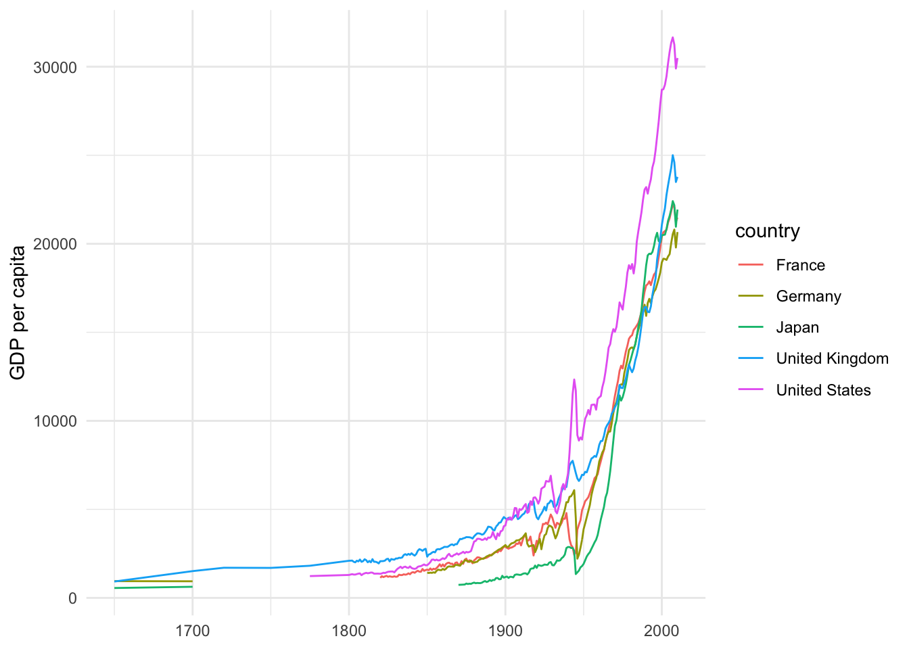
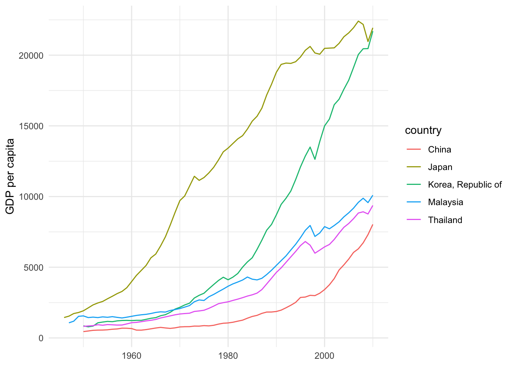
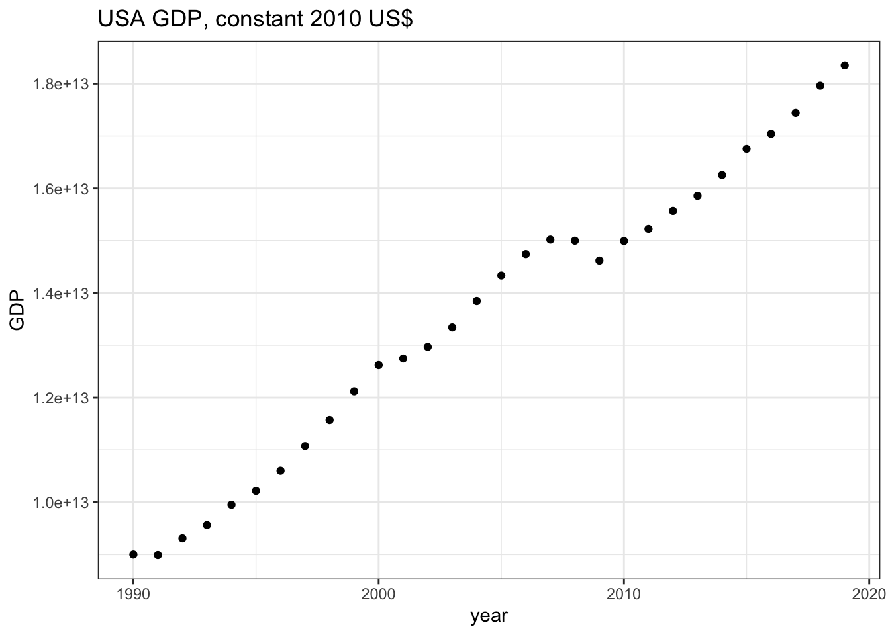
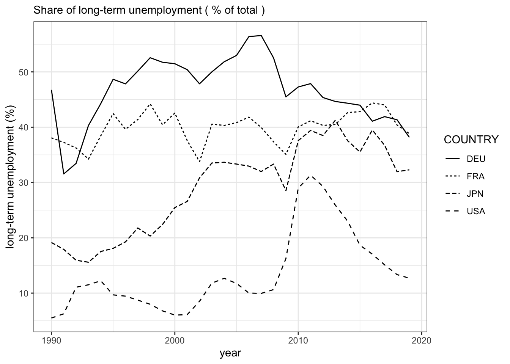

2 マクロデータ
今では国際機関，政府,研究組織によって多くのデータが提供されています．そうしたデータを取得するには，その機関・組織のサイトにアクセスし，csv,EXCEL等のファイルを直接ダウンロードすることでも、もちろん可能です．しかし，すでに述べたように，Rには，国際機関，研究組織等の提供するデータベースからデータを取得するパッケージが多く開発されています．そうしたパッケージを利用すれば，シームレスかつ再現可能な形でのデータの読み込みが可能となります．そこで本資料では，Rパッケージを使った国際機関等のデータの取得方法と簡単な利用方法を紹介します．最初に，以下のマクロ経済統計データベースをとりあげます．
| DB提供機関 | マクロデータ概要 | 該当節 |
|---|---|---|
| フローニンゲン大学成長・発展センター | 所得、経済発展データ等 | 2.1.1,2.1.2 |
| 世界銀行 | 世界開発指標等 | 2.2 |
| EC統計局 | EUデータ（人口、経済、インフラ等） | 2.3 |
| OECD | OECDデータ | 2.4 |
| IMF | 国際金融等データ | 2.5.1 |
| BIS | 銀行統計、為替レート、債務等データ | 2.5.2 |
| DBnomics | データベース集 | 2.6 |
2.1 Groningen Growth and Development Centre
1992年にフローニンゲン大学の経済学部内に設立されたGroningen Growth and Development Centre（GGDC）は、.現在では、グローバリゼーション、テクノロジー、制度的変化の相互作用と、それが長期的な経済成長、構造変化、生産性、不平等に与える影響を研究する研究センターとなっています. 同センターは次のようなデータベースを公開しています.
| データベース名 | 提供されるデータ | Rパッケージ |
|---|---|---|
| Penn World Table | 所得,産出高，投入および生産性 | pwt9 |
| 10-Sector Database | セクター別産出、投入、生産性データ | |
| World Input-Output Database | グローバルバリューチェーン | |
| The Maddison Project Database | 歴史的発展 | maddison |
このうちRパッケージが開発されている２つのデータベース-Penn World TableとThe Maddison Project Database-を紹介しましょう.
2.1.1 Penn World Table ― pwt9
Penn World Tableは経済研究においてもっとも頻繁に利用されているデータベースの１つと言えるでしょう.これは所得，産出高，投入および生産性に関する情報を提供するデータベースです．これは1950年から2017年の182ヵ国をカバーしています（基準年は2011年）6. pwt9はデータパッケージです．country（国名），isocode（3桁の国コード）, year（年）, currency（各国の通貨単位）の変数の他に，rgdpe（支出面の実質GDP），rgdpo（生産面の実質GDP）,hc(1人あたり人的資本指数)などを含む48の時系列データが提供されています．それではinstall.packages()を使ってRにインストールしましょう．
# pwt9のインストール
install.packages("pwt9")Rパッケージptw9はデータだけのパッケージですので，data()関数で読み込みます．スクリプトに次のように入力し，[Run]をクリックしてください．
# pwt9.1の読み込み
data("pwt9.1")データ自体は更新され，現在，バージョン9.1となっています．これを実行することにより，12,376の観察値×52の変数のデータフレームが取得されます． データセットの最終数行を表示させるtail()関数を使ってこのデータセットの最後の部分を見てみましょう．ちなみにtail()関数と反対の結果を出力するのがhead()関数です。head()関数はデータフレームの冒頭部分を表示させます.
tail(pwt9.1)
Penn Wordl Table, pwt9.1
ここでpwt9.1データを使ってジンバブエ経済を観察してみましょう．そのためにジンバブエ経済だけ取り出し，zweというオブジェクトに容れます．
# ジンバブエデータを取り出す
zwe <- pwt9.1 %>%
filter(isocode == "ZWE")ここではfilter()関数を利用し、isocodeが“ZWE”に一致する行だけを抽出しています. つまりジンバブエの行を取り出しています。
filter(データフレーム名, 抽出条件)filter() 関数の使い方はこのようになりますが、ここではパイプ(%)をつかって“pwt9.1”をfilter()関数に渡しています。このためデータフレーム名が省略されています。
ジンバブエのマクロ状態―GDP，雇用，価格の成長率・上昇率―をグラフにし観察してみましょう．それぞれの変数名はrgdpe（実質GDP）,emp（就業者数）,pl_c（家計消費の価格水準）です． グラフ作成までの手順は次のようになります．
- 手順1.３つの変数の時系列的推移を描くために，zweからこの３つの変数とyear変数を取り出します．
- 手順2. ３つの変数を成長率に変換します．
- 手順3. 最後に，３つの変数を表示するグラフを作成します．
手順1：特定の変数(列)の取出し – select()関数
select()関数を使ってyearと３つの変数―rgdpe（実質GDP）,emp（就業者数）,pl_c（家計消費の価格水準）―を抽出します．
zwe <- zwe %>%
select(year, rgdpe, emp, pl_c) 手順2：成長率の計算
成長率の計算にあたっては対数差分を利用します．変数を対数に変換するにはlog()を使います．たとえば，log(rgdpe)と入力し，実行すれば（[Run]をクリックすると），Rはrgdpeの対数を返します．さらに，１期前の対数の値との差をとる必要があります.１期前に変換するためにlag()関数 を利用します7．lag(rgdpe)で１期前の実質GDPの値を指定できます．以上を利用すると，対数差分の計算式は以下のように表現されます．
log(rgdpe) - log(lag(rgdpe)) # 成長率（対数差分）の計算この計算式を利用し，mutate()関数を使って成長率変数を作成します．mutate()は既存の変数（列）に関数を適用し，新たな変数を作成する関数です．新たな変数の名前は，この例では既存の変数の冒頭にg_をつけたものにしています．
zwe <- zwe %>%
mutate(
g_rgdpe = log(rgdpe) -log(lag(rgdpe)),
g_emp = log(emp) -log(lag(emp)),
g_pl_c = log(pl_c) -log(lag(pl_c))
)以上をまとめてスクリプトに書くとつぎのようになります．
zwe <- pwt9.1 %>%
filter(isocode == "ZWE") %>%
select(year, rgdpe, emp, pl_c) %>%
mutate(
g_rgdpe = log(rgdpe) -log(lag(rgdpe)),
g_emp = log(emp) -log(lag(emp)),
g_pl_c = log(pl_c) -log(lag(pl_c))
)これを実行すると，３つの変数とその成長率変数をもつジンバブエデータが作成されます．View()関数で確認してみてください．
View(zwe)手順3：グラフの作成
グラフの作成にはggplot2パッケージを利用します．
zwe_growth <-ggplot(data = zwe) + # GDP成長率のグラフ作成
geom_point(mapping = aes(x =year, y = g_rgdpe))+
geom_line(mapping = aes(x = year,y = g_rgdpe))+
geom_abline(intercept = 0,slope = 0)+
labs(x="year", y= "Growth rate")+
theme_bw()zwe_inflation <- ggplot(data = zwe) + # インフレ（価格上昇率）のグラフ作成
geom_point(mapping = aes(x = year, y = g_pl_c))+
geom_line(mapping = aes(x = year,y = g_pl_c))+
geom_abline(intercept = 0,slope = 0)+
labs(x="year",y="Inflation")+
theme_bw()zwe_emp <- ggplot(data = zwe) + # 雇用成長率のグラフ作成
geom_point(mapping = aes(x = year, y = g_emp))+
geom_line(mapping = aes(x = year,y = g_emp),lty="dashed")+
labs(x="year",y="Employment")+
geom_abline(intercept = 0,slope = 0) + theme_bw()グラフの作成にあたってはggplot2を利用していますが，このパッケージはtidyverseをインストールすることによってインストールされます．すべてのグラフが同じ構成要素―データセット，座標システムおよびデータ点を表す描画の印― で作成されます．使い方は構成要素を“＋”で重ねることが基本です．
ggplot(data = データフレーム名)+
geom_point(mapping = aes(x = x軸変数,y = y軸変数))+ # データを点で表現します.
geom_line(papping = aes(x = x軸変数,y = y軸変数))+ # データを線で結びつけます.この例ではlabs()を使ってx軸とy軸のタイトルを追加しています．labs()の書式は以下のとおりです．
labs(x = "x軸タイトル", y = "y軸タイトル")さらに，geom_abline()を使って成長率ゼロの水準に直線を追加しています．geom_abline()の使用法は次のとおりです.
geom_abline(intercept = "直線の切片の位置",slope ="直線の傾き")最後に，テーマを指定するtheme_でtheme_bw()を選択し，白黒のテーマを選んでいます．それぞれ３つのグラフを描きますが，ここではRパッケージpachworkを使ってグラフのレイアウトを操作します．
install.packages("patchwork") library(patchwork)patchworkパッケージは操作対象の図を足し算記号（＋）や割り算記号（/）等を使って配置します。詳細についてpatchworkパッケージサイトを参照してください．library(patchwork)で呼び出したのちに，次のように入力することで3つのグラフを縦に配置します．
zwe_growth/zwe_inflation/zwe_emp
2.1.2 The Maddison Project Database ― maddison
Maddisonプロジェクトは、世界のあらゆる地域の長期的な経済パフォーマンスを初めて定量化した故Angus Maddisonの業績を引き継ぐものです.Maddisonは世界のすべての地域の長期的な経済パフォーマンスを、一貫した枠組みで定量化した著名な経済学者です.
Maddison Project Databaseはローマ時代から現在までの世界の国々の所得の推定値を提供しています.このデータベースのおかげで成長のダイナミクスや長期的な経済成長の要因を調べることができます.
2.1.2.0.1 maddisonのインストール
次のように入力し、maddisonをインストールし、library()でロードします.
# maddisonのインストール
install.packages("maddison")
# maddisonの呼び出し
library(maddison)このパッケージは1人あたりGDPとともにマディソンプロジェクトのデータを含むデータパッケージです.str()でデータフレームの内容をみると,
str(maddison)## tibble [45,318 × 9] (S3: tbl_df/tbl/data.frame)
## $ year : Date[1:45318], format: "0001-01-01" "0730-01-01" ...
## $ country_original: chr [1:45318] "Austria" "Austria" "Austria" "Austria" ...
## $ gdp_pc : num [1:45318] NA NA NA NA NA NA NA NA NA NA ...
## $ country : chr [1:45318] "Austria" "Austria" "Austria" "Austria" ...
## $ iso2c : chr [1:45318] "AT" "AT" "AT" "AT" ...
## $ iso3c : chr [1:45318] "AUT" "AUT" "AUT" "AUT" ...
## $ continent : chr [1:45318] "Europe" "Europe" "Europe" "Europe" ...
## $ region : chr [1:45318] "Western Europe" "Western Europe" "Western Europe" "Western Europe" ...
## $ aggregate : logi [1:45318] FALSE FALSE FALSE FALSE FALSE FALSE ...19,873の行（観察値）と12列（変数）を持つことが分かります.主要な変数は次のとおりです.
| 変数 | 説明 |
|---|---|
| gdp_pc | 1人あたり実質GDP |
| iso3c | 3文字の国コード |
| continent | 大陸別 |
Maddisonの1人あたり実質GDPをもとに主要経済の長期歴史的推移を確認してみましょう.データフレームmaddisonからfilter()を使ってサンプル国5カ国を取り出します.またデータは17世紀以降にしています.
sample5c <- maddison %>%
filter(iso3c %in% c("FRA","JPN","GBR","DEU","USA"), year > "1600-01-01")取り出した日本、アメリカ、イギリス、ドイツおよびフランスの長期的な推移を見ると、私たちの生活が豊かになり始めたのが20世紀に入ってからだということ,とくに第２次大戦以後だということが分かります.データが得られる範囲内では、それまでのおよそ2世紀にわたり停滞していたことが理解されます.
ggplot(data = sample5c, mapping = aes(x = year, y = gdp_pc, group = country))+
geom_line(mapping = aes(color = country))+
labs(x = NULL, y = "GDP per capita")+
theme_minimal()
現在、アジア経済の成長は目覚ましいものがあります.同じようにMaddisonの1人あたり実質GDPをもとにアジア経済の長期歴史的推移を確認してみましょう.サンプル経済として中国、日本、韓国、マレーシアおよびタイの５カ国を採用しています.
asia <- maddison %>%
filter(iso3c %in% c("CHN","JPN","KOR","MYS","THA"), year > "1945-01-01") ggplot(data = asia, mapping = aes(x = year, y = gdp_pc, group = country))+
geom_line(aes(color = country))+
labs(x = NULL, y = "GDP per capita")+
theme_minimal()
これを見ると、日本が第２次世界大戦後急速に成長し、その後、1970年代末から韓国が豊かになり、いく分劣りますが,マレーシアとタイも続きます.中国は1975年の改革開放路線への転換後1人あたりGDPが伸び始め、WTO加盟後加速化し始めたことが分かります.
2.2 世界銀行World Bank ― WDI
世界銀行が提供する世界開発指標WDI（World Development Indicators）は,グローバルな開発状況と貧困について国際的に比較可能な統計をまとめたものです．このデータベースには，217の経済と40以上の国グループの1,600の時系列指標が収録されています．またその多くの指標のデータは50年以上前までさかのぼることができます.
WDIデータは，さまざまな方法で取得できるようにされています．詳しくは世銀ホームページを参照してください．ファイルが大きいためダウンロードに多少時間がかかりますが，すべてのデータ（ExcelおよびCSV形式ファイル）をまとめてダウンロードすることも可能です．
このWDIデータを利用するためのRパッケージWDIが開発されています .これ以外にもwbstatsというパッケージもありますが，ここではWDIを紹介します． RパッケージWDIは，世界銀行によって運営される40以上のデータベースからデータを検索・ダウンロードすることを可能にしています．そうしたデータベースには世界開発指標(WDI）はもちろんのこと，国際債務統計，Doing Business,人的資本指数，サブナショナルな貧困指標も含まれます．
2.2.1 インストール方法
RパッケージWDIはCRAN上で公開されていますのでインストールにはinstall.packages()を利用します．コンソール画面に次のように入力し，エンターキーを押してください．
# WDIのインストール
install.packages("WDI")WDIを利用するために，スクリプト画面にlibrary(WDI)と入力し，実行しておきます．
# WDIのロード
library(WDI)2.2.2 データを探す- WDISearch()
データを探すためにはWDIパッケージに用意されたWDIsearch()関数を使います．この関数は利用可能なWDIデータ系列のコード名，名前，説明，およびデータソースからなる行列を返します．基本的な書式は以下の通りです．
WDIsearch(string = "検索語", field = "name", short = TRUE, cache = NULL)それぞれの引数を説明しましょう．
- string = "“:”“に検索語（文字列）を入力します．WDIsearchは文字列マッチング関数grepを使い，”検索語”を探します．また，caseを無視します（igunore.case=TRUE）ので，正規表現―簡単に言えば，通常の文字―が利用可能です．
- field = "“:”“に検索するフィールドを指定します．利用可能なフィールドは”indicator“,”name“,”description“,”sourceDatabase“,”sourceOrganization“です．たとえば”name" と入力すれば，データのnameの中を検索します．
- short = : 既定値はshort=TRUEです．この場合，指標コードと名前だけを返します．short=FALSEの場合，指標コード，名前，説明およびデータソースを返します．
- cache: WDIcache関数によって作成されるデータリストを返します．省略された場合（あるいはNULLの場合），WDIseachはデータ系列のローカルリストを探します．
たとえば，GDPに関するデータを探すとしましょう．この例では検索文字列を“gdp”とし，探すフィールドを“name”にしています．また，詳しい説明を得るためにshort=FALSEと設定しています．検索結果はオブジェクトgdpに格納します．
gdp <- WDIsearch(string = "gdp",field = "name",short = FALSE, cache = NULL)この結果をView(gdp)でみると，539×5の行列が返されます．ここで重要なのはindicator変数です．これは指標コードであり，ダウンロードのさいに利用されます．
WDIsearch()の検索結果
絞り込みが不十分なため，539行のデータ系列が表示されてしまっていますが，スクロールダウンして行くと，448行めにGDP(constant 2010 US$)が見つかります．そのindicator名はNY.GDP.MKTP.KDです.以下の例においては，これをダウンロードします．
2.2.3 データをダウンロードする- WDI()
データをダウンロードするためにはWDI()関数を利用しますが，利用方法は次のようになります.
WDI(
country = "all",
indicator = "NY.GDP.MKTP.KD",
start = 1960, end = 2020, extra = FALSE, cache = NULL
)この関数は６つの引数をとります．それぞれを簡単に説明しましょう.
- country = "“:”“の中に，ダウンロード対象の国名（ISO-2文字コードで表現された国名）を入力します．たとえば，”US“,”CA“,”JP“です．複数の国を指定したい場合，c()を利用します. country = c(”US“,”CA“,”JP“) と入力します．なお，”all"と入力すると，すべての利用な国のデータがダウンロードされます．
- indicator = : 指標のコード名を入力します．これは上の表のindicator列に表示されているものになります．
- start = :データの開始年です．通常整数フォーマットの年です（ただし，1960以上）．
- end = :データの終了年です．言うまでもなく，start引数に指定した値より大きくなければなりません.
- extra = : TRUEの場合，地域，iso3コード，所得水準といった追加的な変数を返します．
- WDIcache()によって作成されるリストで，extra = TRUEのとき利用されます．
それではWDI()関数を使って，アメリカ経済のGDP(constant 2010 US$)をダウンロードしてみます．このGDPデータのindicatorコードは，上述のとおり，NY.GDP.MKTP.KDです．ダウンロードしたデータはgdp_usという名前をつけたオブジェクトに格納します．
gdp_us <- WDI(country = "US", indicator = "NY.GDP.MKTP.KD", start = 1990, end = 2019, extra = FALSE, cache = NULL) head()やView()関数を使ってダウンロードしたデータを確認してみてください．
head(gdp_us)## iso2c country NY.GDP.MKTP.KD year
## 1 US United States 1.834911e+13 2019
## 2 US United States 1.796094e+13 2018
## 3 US United States 1.743841e+13 2017
## 4 US United States 1.704090e+13 2016
## 5 US United States 1.675416e+13 2015
## 6 US United States 1.625426e+13 2014最後に，ダウンロードしたGDPデータをggplot2を使ってグラフにしてみましょう．
ggplot(data = gdp_us)+
geom_point(mapping = aes(x = year,y = NY.GDP.MKTP.KD))+
labs(
title = "USA GDP, constant 2010 US$",
y = "GDP"
)+
theme_bw()
これを実行すると，[Plots]ウィンドウに上のグラフが表示されます.
2.3 EU統計局Eurostat - eurostat
欧州委員会の統計局であるEurostatは,オープンデータサービスを通じて,欧州の人口統計,経済,健康,インフラ,交通などに関する数千ものデータセットを提供しています.Rパッケージeurostatはそうした欧州統計局のオープンデータ取得のためのパッケージです.ヨーロッパ経済を実証分析の対象とする場合,とても有益なパッケージです.
2.3.1 Rパッケージeurostatの利用法
2.3.1.1 パッケージeurostatのインストール
最初に,次のようにコンソール画面に入力しエンターキーを押し,eurostatをインストールします.
install.packages("eurostat") # eurostatのインストールさらに,library()でパッケージeurostatを呼び出し,利用できるようにしておきます.
library(eurostat) # eurostatの呼び出し2.3.1.2 データを探す―get_eurostat_toc(), search_eurostat()
get_eurostat_toc() 関数get_eurostat_toc()は,eurostatのデータセットの目次をダウンロードする関数です.最初に,この関数を使って目次をダウンロードしてみましょう.ここではダウンロードした目次をオブジェクト―euという名前にしています―に容れます.
eu <- get_eurostat_toc() # eurostatの目次取得し,オブジェクトeuに格納スクリプト画面にView(eu)と入力し,[Run]をクリックすると,euの内容が表示されます.これは10,004行×8列のデータフレームです.１列目のtitleはデータセット名,２列目codeはデータセットのコード番号です.このcode列の値は,選択されたデータセットをダウンロードするために使用されます.次のtype列はデータセットかフォルダかどうかを示しています.last update of data列はデータの最新の更新日,last table structure changeはテーブル構造の最新の変更時点,そして次の2つの列はデータの開始時期と終了時期を示しています.

Eurostatの目次一覧
search_eurostat()
特定の検索ワードを指定し,データを探すためにはsearch_eurostat()関数を使用します.たとえば,search_eurostat()関数の引数に “unemployment “と入力し,失業に関連したデータセットを探してみましょう.ここではその結果をパイプ(%>%)でView()関数につなげてViewウィンドウで表示させています.
search_eurostat("unemployment") %>% # "unemployment"の検索
View() # View()で検索結果を表示
search_eurostat(“キーワード”)検索結果の出力
search_eurostat()関数の基本的な書き方は以下のとおりです.
search_eurostat(pattern="検索語", type = "dataset", fixed = TRUE)このように引数にpattern,type,fixedの３つをとります.
- pattern="“,”"の部分に探したいデータに関連したキーワードを入力します.これにより,type=引数で指定した内容に応じて,データセットやテーブルが返されます.
- type=""には,dataset, folder, table, もしくは以上のすべてを指定するallのいずれかを入力します.これにより対応したEurostatのテーブルが出力されます.デフォルトではdatasetです.
- fixedにはTRUE, FALSEの論理値をとります.TRUEの場合,patternはマッチされる文字列となります.より複雑なregexマッチングが必要とされる場合,FALSEをとります.
2.3.1.3 データをダウンロードする―get_eurostat()
データをダウンロードするには,get_eurostat()を使います.もっとも基本的な書式は次のようになります.
get_eurostat(id, time_format = "", filters = "", type = "")この関数はおもな引数として次のものをとります.
- id="“:”"にデータセットのコード名を指定します.
- time_format= "“: eurostatフォーマットの時間列をどのタイプに変換するかを指定します.”date“（既定値）と入力した場合,期間の最初のデータによって日付フォーマットDateへと変換されます.”num"を指定すると,数値へと変換されます.テーブルが年次データの場合,デフォルトの日付フォーマットDateを使用するよりも,数値numの時間変数を使用した方が便利です.
- filters = "“:”none"を指定した場合,データセット全体が取得されます.一部分を取得したい場合,ここにリストを入れます（以下の例を参照してください）.
- type= "“: 変数のタイプを指定します.具体的には”code“（デフォルト）もしくは”label"となります.これは変数の値を知りたいときに便利です（以下の例を参照してください）.
それでは具体的な例を使ってデータをダウンロードしてみましょう.ここでは EUの「住宅価格」データを探すことにします.最初に,上で説明したsearch_eurostat()関数を使って取得するデータのidを確認します.その上で,get_eurostat()関数を利用し,イギリス,フランス,スペインの「住宅価格」データを取得してみましょう.
検索結果をオブジェクトhouseに容れます.
house <- search_eurostat("House",type= "table") View(house)の結果をみると,13行めにHouse price index - annual data（住宅価格指数,年次データ）が表示されています.これをダウンロードします.

キーワード“House”の検索結果
ここではダウンロードしたデータをhouse_priceと名前をつけたオブジェクトに容れます.get_eurostat()の引数id = "“には、検索結果のcode変数のtipsho20 を利用します.引数time_format=”num"では数値を指定しています.
house_price<-get_eurostat(id="tipsho20",time_format = "num",type = "code")これにより,４つの変数,1,483の観察値がダウンロードされます.結果をstr()で表示してみます.
str(house_price)house_priceのデータ構造
最初の変数unit（単位）,２番目の変数geoは地理情報,３番目の変数timeは年,最後の変数valuesが住宅価格指数を示しています.しかし,実はこれだけではそれぞれの変数がとる値が何を意味しているかは分かりません,少なくとも分かりづらい表示になっています.とりわけ,unit変数がコード名で表記されているため, “INX_A_AVG”等がわかりません.ダウロードするさいの引数type = “label”とした方が良いでしょう.デフォルトではコード名で表示されます（引数type = “code”）.変数の値の意味を知るには変数のラベルを表示させた方が,コード名よりも便利です.
house_price <- get_eurostat(id="tipsho20",
time_format = "num",
type = "label")type = “label”でダウンロードした上で,次に,以下のように入力し,変数unitがどのような値を持つか確認してみて下さい.
house_price %>%
distinct(unit)distinct()関数はデータフレームから,()内に指定した変数のうちユニークな,異なった値（行）だけを選択します.つまり,unit変数は1,403行から形成されますが,すべて異なった値をとるわけではありません.ユニークな値は―以下のdistinct()関数の結果をみると―３種類だけです.
distinct()関数の出力結果
以下の例でunit変数の値を抽出条件とすることによって特定の行を抽出します.
2.3.1.4 住宅価格上昇率のグラフを描く
いくつかのヨーロッパ経済をピックアップし,住宅価格（年平均変化率）の推移と１時点における住宅価格変化率をみてみましょう.このために次のような作業を行います.
- 複数の国を指定し,住宅データをダウンロードする.
- unit変数にもとづき年平均変化率を示す値（行）を抽出する.
- ggplot2を利用し,ダウンロードしたデータの時系列グラフを作成する.
- 地理情報を利用し,ヨーロッパ地図上に2018年の住宅価格（年平均変化率）を表示させる.
1.複数の国を指定し,住宅データをダウンロードする
最初に,国コードを容れたベクトルを作成しておきます―isoという名前にします.直接get_eurostat()関数において指定しても良いのですがスクリプトが見づらくなりますので,事前に,この作業を行っておきます.
iso <- c("FR","DE","ES","IT","SE")2. unit変数にもとづき年平均変化率を示す値（行）およびサンプル国を抽出する
house_price_eu <- house_price %>%
filter(unit == "RCH_A_AVG", geo %in% iso)変数unitのとる値のうち年平均変化率を表現するラベルは“RCH_A_AVG”ですのでfilter()関数の中の抽出条件の１つにunit == “RCH_A_AVG”を指定しています.また,国を示す変数はgeoですが,このうちベクトルisoに容れた複数の国を選択することになりますのでgeo %in% isoを利用しています.この表記が意味しているのは,「geo変数がisoベクトルの中のいずれかに等しい国コードをとる行を選択しなさい」ということを意味しています.これによりgeo変数のうちisoベクトルの中の国のいずれかに等しい行だけが選択されます.
これで行の抽出条件にマッチする行だけが選択され,house_price_euというオブジェクトに格納されます.View(house_price_eu)やstr(house_price_eu)を利用し,house_price_euの内容を確認してみてください.
3. ggplot2を利用し,ダウンロードしたデータの時系列グラフを作成する
ggplot(data = house_price_eu, mapping = aes(x = time, y = values))+
geom_point(mapping = aes(shape = geo))+
# 点の形状で国別を示すためにaes()の中でshpae = geoと指定
geom_line(mapping = aes(lty=geo))+
# さらにgeom_line()で線を重ねる.
# 線の種類で国別表示するため,aes()の中でlyt=geoと指定.
labs(x="year", y="Housing price",
subtitle = "Housing price (Annual average rate of change %)")+
theme_bw() このスクリプトを実行すると,以下のようなグラフが出力されます.

4. 地理情報を利用し,ヨーロッパ地図上に2015年の住宅価格（年平均変化率）を表示させる
上のグラフでは各国の住宅価格上昇率の時間的推移を比較しましたが,今度は2015年の１時点をとり各国を比較してみましょう.このためにeurostatの提供する地理空間情報を利用し,2015年の住宅価格をヨーロッパの地図上に描きます.最初に出力されるグラフを示しておきましょう.地理情報の使い方の詳細については2.3.2を参照してください.

ヨーロッパ経済の住宅価格上昇率,2015年
出力される結果は上のようになります.この図を描くための詳しい説明は2.3.2に譲り,ここではスクリプトだけ示しておきます.手順は４つです.
- 手順① ヨーロッパの地図データの取得
- 手順② 住宅価格データから特定の国と2015年のデータを抽出
- 手順③ ２つのデータフレームの結合
- 手順④ geom_sf()の利用
①ヨーロッパの地図データを取得し,そのデータをshp_0という名前をつけたオブジェクトに容れます.
shp_0 <- get_eurostat_geospatial(resolution = 10, nuts_level = 0, year = 2016)②上で取得した住宅価格データからヨーロッパ諸国と2015年のデータを抽出します.
そしてその結果をhousing2015というオブジェクトに容れます.最初に,isoの内容は事前に上記のisoベクトルを,次のように書き換え,サンプル国を拡充しておきます.
iso <- c("AT", "BE", "CY","CZ", "DE", "DK", "EL", "ES", "FI", "FR", "HR", "IE", "IT", "LT","LU",
"LV", "MT", "NL", "PT", "SE")housing2015 <- house_price %>%
filter (unit == "RCH_A_AVG", geo %in% iso, time == 2015)③そして,オブジェクトshp_0とhousing2015を結合します.
マージしたデータは地理データと住宅価格データを持つことになります.マージしたデータにはmap_housingというオブジェクト名を与えています.２つのオブジェクトの結合にはinner_join()関数を使っています.
map_housing <- inner_join(shp_0,housing2015, by = "geo")④最後に,ggplot2―geom_sf()―を利用し,ヨーロッパ地図上に,住宅価格上昇率を描きます.
ggplot(data = map_housing) +
geom_sf(mapping = aes(fill=values),color = "white",size = 0.5)+
xlim(c(-10,37))+
ylim(c(34,70))+
scale_fill_continuous_tableau(palette = "Classic Gray")+
labs (subtitle = "Housing price (Annual average rate of change), 2015",
fill = "% Annual average\nrate of change") +
theme_classic()全体のスクリプトをまとめると,次のようになります.
# ヨーロッパの地理空間データをダウンロード
shp_0 <- get_eurostat_geospatial(resolution = 10,nuts_level = 0,year = 2016)
# サンプル国を指定.
iso <- c("AT", "BE", "CY","CZ", "DE", "DK", "EL", "ES", "FI", "FR", "HR", "IE","IT", "LT","LU", "LV", "MT", "NL", "PT", "SE")
# サンプル国の住宅価格（年平均変化率）データを取得.
housing2015 <- house_price %>%
filter (unit == "RCH_A_AVG", geo %in% iso),time == 2015)
# 地理空間データと住宅価格データを結合.
map_housing <- inner_join(shp_0,housing2015, by = "geo")
# ヨーロッパの地図上に住宅価格を表示.
ggplot(data = map_housing) +
geom_sf(mapping = aes(fill=values),color = "white",size = 0.5)+
xlim(c(-10,37))+
ylim(c(34,70))+
scale_fill_continuous_tableau(palette = "Classic Gray")+
labs(subtitle = "Housing price (Annual average rate of change), 2015",
fill = "% Annual average\nrate of change") +
theme_classic()このようにRパッケージeurostatを利用することで,わずか10数行のスクリプトを書くだけで上のグラフを描くことができます.
2.3.2 応用例 ― 地理空間情報の利用
北欧諸国はミステリー小説の多くの傑作を生み出しています.そうした背景には社会経済的要因はもちろんのこと犯罪を身近なものと受け止める社会不安があるのかもしれません.そこで欧州委員会統計局Eurostatが提供する犯罪や暴力に対する不安度を示す指標によって,そうした社会的不安を代理させ観察することにします.そして同指標を視覚的に示すためにEurostatの提供する地理空間情報と結合し,ヨーロッパ地図上に表示します.主な手順は次のようになります,
- 地理空間情報(シェイプ・ファイル)をダウンロードし,ヨーロッパ地図を描く.
- 犯罪・暴力・破壊行為に対する不安度を示す指標をダンロードする.
- 1と2のファイルを結合し,不安度指標を表示した北欧地図を描く.
1 地理空間情報のダウンロードとggplot2による描画―sfパッケージ
地理空間データ分析用のRパッケージとしてsfパッケージがあります.sfパッケージは,simple featuresというGIS(geographic information system)データ規格をRで扱うためのパッケージです.Eurostatの提供する地理空間情報データを扱うために,最初に,このパッケージをインストールしておきます. コンソール画面に次のように入力し,エンターキーを押してください.
# sfパッケージのインストール
install.packages("sf")インストールを終えたら,スクリプト画面に次のように入力し,実行します.
# sfパッケージの呼び出し
library(sf)このパッケージを利用することによって地理空間データのさまざまな処理が可能となります.
すでに幾度も登場しているggplot2も,バージョン3.0.0以後sfクラスのデータを扱えるようになりました.sfクラスのオブジェクトのプロットには,geom_sf()という関数を使います.
Eurostatの地理空間情報は,国レベルにとどまらず,それ以上に詳細な行政単位レベルの情報も提供しています.1970年代初頭,Eurostatは,欧州連合（EU）の地域統計を作成するために,EUの領土を分割するための統一された,一貫したシステムとしてNUTS (Nomenclature of territorial units)分類 を設定しました.イタリアを例にとれば,NUTSレベル0はイタリアという国そのものの,NUTSレベル１はNord-Ovest（北西部）, Sud（南部）といった地域,さらにNUTSレベル２はPiemonte（ピエモンテ）, Liguria（リグーリア）, Lombardia（ロンバルディア）といった州, もっとも細かいレベルのNUTSレベル３はTorino（トリノ）, Genova（ジェノバ）, Milano（ミラノ）等の都市空間を示します.これにより,たとえば,個人世帯の可処分所得の地理的分布を調べたいとき,NUTSレベル2すなわち各国の州レベルまで調べること（グラフ表示）も可能です.
それでは最初に,NUTSレベル１と２のヨーロッパ地図を描いてみましょう.地図を描くためにはシェイプファイルshapefileという図形情報と属性情報を入れたファイルをダウンロードする必要があります.RパッケージeurostatはGISGOからヨーロッパの地理情報を取得する関数get_eurostat_geospatial()を用意しています.この関数の基本的な用法は次のようになります.
get_eurostat_geospatial(
output_class = "sf",
resolution = ,
nuts_level = ,
year = 2016
)以下はこの関数がとる引数の概要です.
- output_class = "“:”“に sf, df,もしくはspdfのいずれかの文字列を指定することで返されるオブジェクトのクラスを選択します.sfはsimple features,dfは data_frame, spdfはSpatialPolygonDataFrameを表現します.デフォルトは”sf"です.
- resolution = : 地理空間データの解像度を指定します.利用可能な解像度は60（1:6,000万）,20（1:2,000万）,10（1:1,000万）,03（1:3,000万）,01（1:1,000万）のいずれかです.
- nuts_level = : NUTS分類のレベルをしていします.0,1, 2, 3, allのいずれかをとります.
- year = : NUTSのリリース年を指定します.具体的には,2003, 2006, 2010, 2013, 2016 のいずれかを入力します.
それでは地理空間情報をダウンロードしてみましょう.ここではNUTSレベルの異なる２つのオブジェクトを作成します.
# NUTS分類のレベル0で地図情報を取得し,オブジェクトshp0に容れる
shp0 <- get_eurostat_geospatial(output_class = "sf", resolution = 10, nuts_level = 0, year = 2016) # NUTS分類のレベル2で地図情報を取得し,オブジェクトshp2に容れる
shp2 <- get_eurostat_geospatial(output_class = "sf", resolution = 10, nuts_level = 2, year = 2016)オブジェクト―shp0, shp2―は,引数output_class=“sf”で指定していますのでsfクラスです. geom_sf()はsfクラスのオブジェクトを扱いますから, この指定が必要となります（ただし,デフォルトでもsfクラスですから,指定しなくとも結果はsfクラスのオブジェクトとなります）.
NUTSレベル0は国単位を意味します.NUTSレベル２は,上述のように,イタリアで言えばロンバルディアといった州レベルの行政単位まで描かれます. ヨーロッパの地図情報が取得できましたので,ggplot2を利用しヨーロッパ地図を描いてみましょう.ggplot2にはsfクラスのオブジェクトを描くためにgeom_sf()が開発されています.グラフの作成はこれまで紹介したggplot2の利用方法に同じです.基本はggplot(オブジェクト名)+geom_sf()です.
ggplot(shp0)+ # オブジェクト名を入力
geom_sf() # sfクラスのオブジェクトを指定これだけでヨーロッパ地図がプロット画面に出力されます.しかし,かなり広いヨーロッパ地域が表示されてしまいます.そこでx軸,y軸の範囲を限定し,わたしたちが通常目にするヨーロッパを描くとしましょう.そのためにはxlim()を利用し,x軸の範囲を決定します.xlim（c（西に-10度, 東に37度））のように東西の経度を入力します.y軸の範囲も同様に,ylim(c(,))を利用し,緯度を入力します.あるいはggplot2のcoord_map()という関数を使っても良いでしょう.引数xlim=()で経度,ylim=()で緯度の範囲を指定できます.たとえば,coord_map(xlim = c(-30, 45), ylim = c(30, 75))と入力することによってヨーロッパ地域を指定することができます.
nuts0 <- ggplot(shp0) +
geom_sf()+
xlim(c(-10, 37))+
ylim(c(34, 65))わずか数行の入力で以下のグラフのようなヨーロッパ地図を描くことができます.あわせてNUTレベル2の地図も描いてみましょう.上述のグラフ作成との違いはggplot()にsfオブジェクト名shp2を指定するだけです.
nuts2 <- ggplot(shp2) +
geom_sf()+
xlim(c(-10, 37))+
ylim(c(34, 65))異なったNUTSレベルの地理情報
北欧地域だけを描く場合には,x軸範囲とy軸の範囲を以下のように限定すれば,北欧地域だけの地図を描くことができます.
n_euro <- ggplot(shp0)+
geom_sf()+
xlim(c(0,32))+ # 北欧地域の範囲を経度で指定
ylim(c(54,70))+ # 北欧地域の範囲を緯度で指定2 犯罪・暴力・破壊行為に対する不安度データのダウンロード
次に,犯罪や暴力に対する不安度データを地図上に表示するために,犯罪に関連するデータを探します.これはすでに紹介したsearch_eurostat()関数を利用します. “crime（犯罪）”をキーワードにデータを探してみましょう.
search_eurostat("crime",type="table") %>%
View()上のスクリプトを実行すると,search_eurostat()の結果をView()関数に渡しているため,crimeに関連した検索結果が表示されます.関連するデータテーブルは１つだけでsdg_16_20というファイルです.このデータは地域における犯罪・暴力・破壊行為を報告した人の比率を示しています.そうした点では人々の犯罪や暴力に対する不安度を代理する指標として良いでしょう.
次に,データ・テーブルsdg_16_20をダウンロードし,結果をcrimeというオブジェクトに容れます.
crime<-get_eurostat(id="sdg_16_20",time_format = "num")これによりヨーロッパ諸国の犯罪・暴力・破壊行為の報告者比率データを取得できます.ここから第１に,北欧４カ国とバルト３国の７ヵ国だけを抽出します.このために変数のgeoの値が“DK”,“SE”,“NO”,“FI”,“LV”,“EE”,“LT”のどれかをとる行を抽出します.
filter(geo %in% c("DK","SE","NO","FI","LV","EE","LT"))ここで“geo %in% c()”は「geo変数がc（国コード）の中のいずれかに等しい国コードをとる行を選択しなさい」を意味しています.また,このデータは,incgrpという変数を持っていますが,これはincome group（所得グループ）を示し,所得階層別情報を提供しています.しかし,ここでは所得階層別情報は使いませんのでincgrp変数のうち値がTOTALの行だけを抽出します.そこで上の抽出条件にくわえて,次の抽出条件も入力します.
filter(incgrp == "TOTAL")２つの抽出条件をあわせると,次のようになります.
filter(geo %in% c("DK","SE","NO","FI","LV","EE","LT"), incgrp == "TOTAL”)さらに,時間も2017年に指定し ― time == 2017 ―,最終的に次のように入力します.
ne_crime <- crime %>%
filter(time == 2017, geo %in% c("DK","SE","NO","FI","LV","EE","LT"), incgrp == "TOTAL")filter()の基本コードはfilter(データフレーム名,抽出条件)ですが,ここではパイプ(%>%)を利用し,データフレームcrimeを関数filter()に渡していますのでデータフレーム名が省略されています. 最終的に,ne_crimeというオブジェクトに容れます.
以上で,北欧地域の犯罪や暴力に対する不安度を示す指標が取得できました.これを地図上に表示させるために,地図情報の入ったshp0と結合します.
3 シェイプファイルshp0と犯罪データファイルne_crimeの結合
ここではヨーロッパの地図情報の入った“shp0”ファイルと,北欧地域の犯罪不安度情報の入った“ne_crime”ファイルを結合します.データフレームの結合にあたってはinner_join()関数を使います.ジョイン_join()は２つのデータテーブルの変数を結合します.inner_join()はby= “キー変数”にしたがって,キーの値が等しい観察値が結合されます.したがってキー変数にマッチしない観察値は除外されます.
inner_join()のもっとも簡単な書き方は次のようになります.２つのデータフレームa,bがある場合,
inner_join(データフレームa,データフレームb, by = "キー変数")それではinner_join()を利用し,shp0とne_crimeを,両データフレームに共通のgeo変数を基準に結合します.その上でshp_neというオブジェクトに容れます.
shp_ne <- inner_join(shp_0, ne_crime, by = "geo") これで不安度指標と地理空間情報の入った,74行×17列のデータフレームが作成されました.残りの作業はggplot2を使って,不安度指標を色の濃淡で示した北欧地図を描くだけです.
shp_neはsfクラスのオブジェクトです.このため描画にあたってはgeom_sf()関数に渡すだけです.この場合,何よって色分けするかをaes() で指定します.この例では,犯罪・暴力・破壊行為の報告者比率を示すvalues変数の値の大きさで色分けします.このために fill = valuesとします.
具体的には,まず最初に,ggplot()にデータフレーム名を指定します.
ggplot(shp_ne) +次に,geom_sf()関数を使ってデータを地図に描きますが,変数valuesを地図上の色の濃淡で表現するために,aes(fiill = )で指定します.
geom_sf(mapping = aes(fill=values),color = "white",size = 0.5)+values変数は犯罪・暴力・破壊行為の報告者比率です.さらに,color = “”でボーダー（国境）をwhite(白)で描き,その線の太さをsize = で指定しています.これで基本的な作業は終わりです.実行すると,犯罪・暴力・破壊行為の報告者比率がデフォルトの色の濃淡によって描かれた北欧地図が出力されます. この例ではさらに,scale_fill_continuous_tableau()を使って犯罪・暴力・破壊行為の報告者比率を描く色の濃淡をグレイに変更します.この関数によって連続したカラースケールを指定することができます.引数palett = “”部分に “Blue”, “Red”のように入力します.ここでは白黒印刷にあわせ,グレイの色を採用しています.
scale_fill_continuous_tableau(palette = "Classic Gray")+次に,labs()を使ってタイトルをつけます.
labs(title = "The share of the population who reported \nthat they face the problem of crime, violence or vandalism, 2017", fill = "% the respondent \nfeels crime") +英文タイトルの中のthatの前に"\n"が挿入されていることに気づいたと思います.これはその部分で文書の改行を命令する記号です.また,fill = “”によって色の濃淡を表示するバーのタイトルを指定しています.
最後に,背景のテーマを設定します.
theme_classic()以上のスクリプトをまとめると,つぎのようになります,
ggplot(shp_ne) +
geom_sf(aes(fill=values),color = "white",size = 0.5)+
scale_fill_continuous_tableau(palette = "Classic Gray")+
labs(title = "The share of the population who reported \nthat they face the problem of crime, violence or vandalism, 2017", fill = "% the respondent \nfeels crime") +
theme_classic()これを実行すると,次のようなグラフが描かれます.
犯罪や暴力,破壊行為の問題に直面していると回答した人の割合（％）
見られるように,サンプル経済の中では編集者ミカエル8 の活躍するスウエーデンがもっとも高く,これにリガの犬9 が蠢くラトビア等のバルト３国が続きます.バルト海を挟む諸国において犯罪や暴力,破壊行為の問題に直面している人々が多そうです.こうした社会的不安が犯罪小説の創造に寄与しているのかもしれません.
4 地理空間情報― NUTSレベル3の利用
さらに,スウェーデンに注目し,こうした犯罪の背景―犯罪や暴力,破壊行為―を地域レベルでみてみましょう.これまで地理空間をNUTSレベル０としてきました.つまり国単位で情報を扱っていました.次に,北欧社会の中でも,犯罪や暴力,破壊行為の問題にもっとも強く直面しているスウェーデンに注目し,NUTSレベルを3までブレークダウンし,より詳細な犯罪情報を地図上に描いてみます.
上で利用したデータはNUTSレベル２の情報を提供していませんが,犯罪に関連したNUTSレベル２,3のデータとしては「犯罪記録件数」(Crimes recorded by the police by NUTS 3 regions)があります.このデータをget_eurostat()を利用し,ダウンロードします.これをcrimeという名前をつけたオブジェクトに容れます.本データのidはcrim_gen_regです.
crime <- get_eurostat(id = "crim_gen_reg")最初に,スウェーデンをピックアップします.このためgeo変数にfilter()をかけますが,抽出条件をgeo == “SE”とすると,スウェーデンの国内の行政単位のデータ―たとえば,SE1,SE2という記号で表示―は抽出条件に合致しないため,削除されてしまいます.そこで最初に,str.detect()関数を使って“SE”という文字列を持つgeo変数の行を探します.そしてそれと一致したgeo変数の行を抽出します.
filter(str.detect(geo,"SE"))str.detect(geo, “SE”)はgeo変数が “SE”という文字列を含む場合,真TRUEを返します.これにfilter()を適用することによって,str.detect()関数がTRUEを返す行を抽出します. データは2009年と2010年のみですが,ここでは2010年を採用します.
filter(Date == "2010-01-01")以上,必要な行の抽出が終わりです.これまでのスクリプトをまとめると,以下のようになります.抽出結果をcrime_sweという名前をつけたオブジェクトに容れてあります.
crime_swe <- crime %>%
filter(str_detect(geo, "SE"), time == "2009-01-01") 次に,NUTSレベル３のデータをダウンロードし,shp3という名前のオブジェクトに容れます
shp3 <- get_eurostat_geospatial(resolution = 10, nuts_level = 3, year = 2016)
# NUTS分類のレベル3で地図情報を取得し,オブジェクトshp3に容れるそれでは,crime_sweとNUTSレベル3のシェイプファイルをinner_join()関数を使って結合します.そして結合したファイルをshp3_crime_sweという名前のオブジェクトに容れます.
shp3_crime_swe <- inner_join(shp3,crime_swe, by = c("NUTS_ID"="geo")) by = “キー変数”の部分がこれまでと異なります.２つのファイルを結合するさいに,異なる変数を利用する場合,上述のようにby = c(“NUTS_ID”=“geo”)とします.NUTS_IDはshp_2の中の変数,geoはcrime_sweの中の変数です.
これで地図を作成するデータが出来上がりました.あとはggplot２を利用するだけです.スクリプトは次のようになります.
ggplot(shp3_crime_swe) +
geom_sf(aes(fill=values),color = "white",size = 0.5)+
xlim(c(7,25))+
scale_fill_continuous_tableau(palette = "Classic Gray")+
labs(title = "Crimes recorded by the police,2010",
fill = "% the number of \ncrimes recorded by the police")+
theme_classic()スウェーデンにおける犯罪記録件数, 2010
ここでは単純に犯罪件数を表示させているだけですから,スウェーデンの中でも大都市圏―Stockholms県,Västra Götalands県やSkåne県等―で犯罪件数が多いことが理解されます.またグラフから理解されるように,犯罪件数には地理的な関連があるかもしれません.犯罪が多発する県の隣接する県でも多そうです.これは空間的なデータが相関していることを示唆しており,空間情報を分析するさいに注意を要する点です.
参考文献 Chris Brunsdon, Lex Comber著(湯谷啓明・工藤和奏・市川太祐訳)『Rによる地理空間データ解析入門』共立出版, 2018年.
2.4 経済協力開発機構 - OECD
OECDが提供するデータは、もちろん、OECDのサイトOECD.Stat からも取得できます。同サイトに入ると、左側のウィンドウにテーマ別データ一覧が表示されており、ここから目的のデータを探すことができます。ウィンドウ上部にある検索ウィンドウからキーワード検索も可能です.
しかし、この方法ではRから離れブラウザでデータを検索し、データをダウンロードすることになります。これは煩わしい作業であることは言うまでもなく、データ分析のための再現性も難しくなるかもしれません。こうした問題に対処するために、RパッケージOECDを利用することが推奨されます。このパッケージによってOECDのAPIから動的で再現性の高い方法でデータをダウンロードすることができます.
2.4.1 RパッケージOECDの利用方法
それでは同パッケージをインストールしましょう。コンソール画面に次のように入力し、エンターキーを押してください。
# RパッケージOECDのインストール
install.packages("OECD")パッケージを利用するにはlibrary()で呼び出しておく必要があります。スクリプト画面に次のように入力し、実行しておきます。
# RパッケージOECDの呼び出し
library(OECD)2.4.1.1 データを探す - get_datasets(), search_dataset()
OECDのデータをダウンロードするにはデータ系列のidコードが必要となります。しかし、ほとんどの場合、正確なidコード情報を事前に保有していることは少ないと思います。そこで最初に、利用可能なデータセットとその説明を含むデータフレームをダウンロードし、その上で検索を始めるのがベストの方法です。これはget_datasets()関数で実行できます。
# OECDのデータフレームのリストを取得
get_datasets() %>%
# head()関数でデータフレームの冒頭部分を表示
head()## # A tibble: 6 × 2
## name url
## <chr> <chr>
## 1 Locational banking statistics https://www.bis.org/stati…
## 2 Consolidated banking statistics https://www.bis.org/stati…
## 3 Debt securities statistics https://www.bis.org/stati…
## 4 Credit to the non-financial sector https://www.bis.org/stati…
## 5 Credit-to-GDP gaps https://www.bis.org/stati…
## 6 Debt service ratios for the private non-financial sector https://www.bis.org/stati…head()関数によって最初の６行を表示させています。全体で1,392行×2列のデータフレームが取得されます。１列目はデータセットのid、２列目titleはデータセットのタイトル名です。これによってOECDにおいて、どのようなデータセットが利用可能かが分かります。
データセットの検索方法としてはsearch_dataset()関数を使ってキーワードで検索する方法もあります。たとえば、失業“unemployment”をキーワードに検索してみましょう。これを実行すると、コンソール画面に“unemployment”を含んだデータ等の一覧が表示されます.デフォルトでは大文字小文字を区別しません。
search_dataset("unemployment")## # A tibble: 10 x 2
## id title
## <chr> <chr>
## 1 DUR_I Incidence of unemployment by duration
## 2 DUR_D Unemployment by duration
## 3 AVD_DUR Average duration of unemployment
## 4 AEO2012_CH6_FIG4 Figure 4: Youth and adult unemployment
## 5 AEO2012_CH6_FIG29 Figure 29: Youth employment and unemployment by education …
## 6 AEO2012_CH6_FIG19 Figure 19: The trade off between vulnerable employment and…
## 7 PTRUB PTR for families claiming Unemployment Benefits
## 8 MIG_NUP_RATES_GE… Employment, unemployment, and participation rates by place…
## 9 NRR Net replacement rate in unemployment
## 10 PTRCCUB PTR for parents claiming Unemployment Benefits and using c…2.4.1.2 データセットのダウンロード - get_dataset()
それでは最初のデータセットDUR_I―Incidence of unemployment by duration (期間別の失業者発生比率％)―をダウンロードしてみましょう.データのダウンロードにはget_dataset()関数を使います.基本的な使い方は次のようになります,
get_dataset("dataset", filter = NULL, start_time = NULL, end_time = NULL,
pre_formatted = FALSE)この関数がとる主要な引数は以下のとおりです.
- dataset : ダウンロードするデータセットのidを入力します.
- filter= : NULLの場合、すべてダウンロードします.
- start_time = : データの開始時点.
- end_time = : データの終了時点.
この関数を使ってDUR_Iデータを取得し、それをunempというオブジェクトに容れるとします.もっとも簡単なコードは次のとおりです.
unemp<- get_dataset("DUR_I")str(unemp)でデータフレームの中をみると、8変数、155,924の観察値のデータセットがダウンロードされたことが分かります.str()関数はデータフレームの変数（列）や観測値（行）についての情報を出力させる関数です.
str(unemp)## tibble [160,111 × 8] (S3: tbl_df/tbl/data.frame)
## $ COUNTRY : chr [1:160111] "AUS" "AUS" "AUS" "AUS" ...
## $ SEX : chr [1:160111] "MW" "MW" "MW" "MW" ...
## $ AGE : chr [1:160111] "1519" "1519" "1519" "1519" ...
## $ DURATION : chr [1:160111] "UN1" "UN1" "UN1" "UN1" ...
## $ FREQUENCY : chr [1:160111] "A" "A" "A" "A" ...
## $ TIME_FORMAT: chr [1:160111] "P1Y" "P1Y" "P1Y" "P1Y" ...
## $ obsTime : chr [1:160111] "1978" "1979" "1980" "1981" ...
## $ obsValue : num [1:160111] 20 19.3 21 22.8 21.4 ...引数を指定した形でデータをダウンロードしてみましょう.引数filterを使って日本とドイツのデータ、引数start_tim,end_timeで期間を1990年から2019年のデータをダウンロードするとします.このためにはスクリプトに次のように入力するだけです.
unemp <- get_dataset("DUR_I",filter=list(c("JPN","DEU")),
start_time = 1990,end_time = 2019)また、たとえば、filter = “age”のように、変数についてもfilterを適用できます.
2.4.1.3 データ構造を調べる - get_data_structure()
ダウンロードしたデータの内容は、上述のように、str()関数やView()関数を利用して確認することができます.しかし、これだけではそれぞれの変数が何を意味するのか分からない場合があります.たとえば、DURATION変数が「（失業）期間」を表現していることは分かりますが、しかし、その変数がとる “UN1”, “UN3”といった値が何を意味しているかは分かりません.このためデータ構造をチェックする必要があります.
データ構造のチェックにはget_data_structure()関数を利用します.同関数は指定したデータシリーズの変数名とその説明を返します.
# DUR_Iのデータ構造の説明を取得、data_strに容れます.
data_str<-get_data_structure("DUR_I")
# str()関数でdata_strの中を見ます.
str(data_str,max.level = 1) ## List of 12
## $ VAR_DESC :'data.frame': 12 obs. of 2 variables:
## $ COUNTRY :'data.frame': 53 obs. of 2 variables:
## $ TIME :'data.frame': 53 obs. of 2 variables:
## $ SEX :'data.frame': 3 obs. of 2 variables:
## $ AGE :'data.frame': 7 obs. of 2 variables:
## $ DURATION :'data.frame': 5 obs. of 2 variables:
## $ FREQUENCY :'data.frame': 1 obs. of 2 variables:
## $ OBS_STATUS :'data.frame': 16 obs. of 2 variables:
## $ UNIT :'data.frame': 319 obs. of 2 variables:
## $ POWERCODE :'data.frame': 32 obs. of 2 variables:
## $ REFERENCEPERIOD:'data.frame': 100 obs. of 2 variables:
## $ TIME_FORMAT :'data.frame': 5 obs. of 2 variables:このさい、表示レベルをmax.level = 1を使い、１に指定しています.max.level=を利用せずに、str(data_str)と入力しても、類似した情報が得られますが、出力画面が煩雑になるので、この例ではmax.level=1に抑えています.
コンソール画面に上のように入力し、エンターキーを押すと、図のような出力結果が得られます.DUR_Iの説明を見ると、VAR_DESCを初めとし、あわせて12の変数があることが分かります.ここでDURATION変数の詳細を確認してみましょう.コンソール画面にdata_str$DURATIONと入力し、エンターキーを押してみてください. $記号はデータフレームの中の変数を指定する方法です.つまり、data_str$DURATIONは「データフレームdata_strの中の変数DURATIONを指定」を意味します.
#データフレームdata_strの中の変数DURATIONを指定.
data_str$DURATION ## id label
## 1 UN1 < 1 month
## 2 UN2 > 1 month and < 3 months
## 3 UN3 > 3 month and < 6 months
## 4 UN4 > 6 month and < 1 year
## 5 UN5 1 year and overこれにより変数DURATIONのとる値が何を意味しているかを示した一覧が出力されます.これをみると、変数DURATIONの値“UN1”は１月未満,“UN2”は１月以上３ヶ月未満の失業期間を示すことが分かります.
続けて変数AGEのデータ構造も確認しておきましょう.コンソール画面にdata_str$AGEと入力し、エンターキーを押します.
#データフレームdata_strの中の変数AGEを指定.
data_str$AGE ## id label
## 1 1519 15 to 19
## 2 1524 15 to 24
## 3 2024 20 to 24
## 4 2554 25 to 54
## 5 5564 55 to 64
## 6 6599 65+
## 7 900000 Totalこのように、AGE変数はid列に記載されているように1519や1524など７つの値をとります.そしてlabelに示されているように、それぞれ年齢階層に対応しています.たとえば、6599という値は65+と表示されていますので、65歳以上ということが分かります.つまり、65歳以上の失業者数です.年齢に関係ない総数は900000という数値で表現されています.
さらに、失業者の性別を表現する変数SEXをチェックしておきましょう.
# データフレームdata_strの中の変数SEXを指定
data_str$SEX ## id label
## 1 MEN Men
## 2 WOMEN Women
## 3 MW All persons変数SEXは３つの値をとることが分かります.MEN(男性)、WOMAN(女性)およびMW(両者の合計)です.
2.4.2 応用例―長期失業者推移の可視化
上でチェックしたデータ構造を利用し、失業問題でとりわけ問題となる長期失業者の推移を調べてみましょう.この例では最初にドイツ、フランス、日本およびアメリカの長期失業者の推移を比較します.その上で日本経済の長期失業に焦点を当てて考察します.作業手順は以下のようになります.
- 手順1 長期失業者の抽出 ― filter(), select()
- 手順2 文字列型から整数型へのデータの型の変更 ― as.integer()
- 手順3 長期失業者のプロット―ggplot2による可視化
手順1 長期失業者の抽出 ― filter(), select() 最初に、フランス、ドイツ、日本およびアメリカのデータをダウンロードします.そしてそれをunempというオブジェクトに格納します.
unemp <- get_dataset("DUR_I", filter = list(c("DEU","FRA","JPN","USA")),
start_time = 1990,end_time = 2019)次に、変数DURATIONを使って失業者に占める長期失業者のシェア（%)だけを抽出します.前掲のように長期失業者（１年以上）は“UN5”の値をとります.また、ここでは年齢別は無視します.年齢階層を無視した場合、変数AGEは“900000”の値をとります.さらに、男女合計の失業者を利用しますので変数SEXは“MW”の値をとるものを選択します.結果をlong_unempと名付けたオブジェクトに容れます.なお、DURATION, AGE,SEX変数の値は文字列ですので,“”を付けて指定する必要があります.条件にあった行（観察値）の抽出にはdplyrのfilter()関数を利用します. この関数の書き方はfilter(データフレーム名,抽出条件)です.ここではパイプ(%>%)でデータフレーム名をfilter()関数に渡しますので、filter()関数の引数は抽出条件だけを入力します.
long_unemp <- unemp %>%
# filter()関数を使ってDURATIONの値がUN5（失業期間１年以上）, AGEの値が900000（総数）、SEXの値がMW（男女計）を指定
filter(DURATION == "UN5", AGE == "900000", SEX == "MW") これで長期失業者数データを取得できます.View(long_unemp)でデータフレームlong_unempを表示できます.ここでは長期失業者の推移を検討するだけですので、必要な変数は国名変数COUNTRY, 観察時点変数obsTIME,および観察値変数ovsValueの３つだけです.select()関数を使って３つの変数だけを取り出します.上述のコードにさらにselect()関数をパイプ(%>%)でつなげて３つの変数だけを選択します.
long_unemp <- unemp %>%
filter(DURATION == "UN5", AGE == "900000", SEX == "MW") %>%
select(COUNTRY, obsTime, obsValue)select()関数では変数名の変更も可能です.obsTimeをyear、obsValueをvalueという変数名に変更しておきます.これを加えて上のコードを書き直すと次のようになります.
long_unemp <- unemp %>%
filter(DURATION == "UN5", AGE == "900000", SEX == "MW") %>%
select(COUNTRY, year = obsTime, value = obsValue)なお、変数名の変更はrename()関数を使ってもできます.rename（）関数の使い方は
rename(新しい変数名 = 古い変数名)上のコードにパイプ（%>%）でつなげてrename()関数を使うと、次のように書くことができます.
long_unemp <- unemp %>%
filter(DURATION == "UN5", AGE == "900000", SEX == "MW") %>%
select(COUNTRY,obsTime,obsValue) %>%
rename(year = obsTime, value = obsValue)手順2 文字列型から整数型へのデータの型の変更 ― as.integer()
これで３つの変数―COUNTRY, year, value―を持つ、データフレームlong_unempが出来上がりました.このデータフレームをstr(long_unemp)でみると、国を表現するCOUNTRY変数と暦年を表現するyearが文字列データであることが分かります.$ COUNTRY: chr, $year: chrとなっていることに気づくと思います.「chr」はcharacterの略で文字列データであることを示しています.つまり、yearは1990, 1991といった数値ですが、Rはこれを文字として理解しています.また、文字列型のデータは“”で囲まれた形で表記されます.
str(long_unemp)## tibble [120 × 3] (S3: tbl_df/tbl/data.frame)
## $ COUNTRY: chr [1:120] "FRA" "FRA" "FRA" "FRA" ...
## $ year : chr [1:120] "1990" "1991" "1992" "1993" ...
## $ value : num [1:120] 38.1 37.3 36.2 34.2 38.5 ...文字列データのままでは以下の処理が難しくなりますので、これを数値データ―整数データ―に変換します.データの型を整数に変換するにはas.integer()関数を利用します.この関数の引数に、データフレームlong_unempの中のyearを指定します.データフレームの中の特定の変数列を指定するには「データフレーム名$変数列名」です.
# year変数のデータの型を文字列型から整数型に変換.
as.integer(long_unemp$year) さらに、この型を変換したデータyearをもとのデータフレームに容れます.
long_unemp$year <- as.integer(long_unemp$year)これは次のような処理を行っています.as.interger（）関数を使ってデータフレームlong_unempの中のyear変数を整数型に変換し、その結果を割当演算子（←）を使ってデータフレームlong_unempの中のyear変数に割り当てます（置き換えます）.コンソール画面でstr(long_unemp)と入力し、エンターキーを押してみてください.
str(long_unemp)## tibble [120 × 3] (S3: tbl_df/tbl/data.frame)
## $ COUNTRY: chr [1:120] "FRA" "FRA" "FRA" "FRA" ...
## $ year : int [1:120] 1990 1991 1992 1993 1994 1995 1996 1997 1998 1999 ...
## $ value : num [1:120] 38.1 37.3 36.2 34.2 38.5 ...“$year : int”において理解されるように、変数yearは文字列型chrから整数型intに変わっています.intはintenger（整数）の略です.また文字列型の変数だったときには年数はすべて“”で囲まれていましたが、変数の型を変更した結果,""も消えています.
手順3 長期失業者のプロット―ggplot2による可視化
それでは４カ国の長期失業者のシェアの推移のグラフを描き、比較してみましょう.グラフの作成にあたってはRパッケージggplot2を利用します.
ggplot2でのグラフの作成方法は,レイヤーをプラス記号（＋）で重ねて行くということがポイントです.最初のレイヤーはもっとも基本的なもので、グラフを描画するための座標平面を作成します.ここでは引数に、利用するデータフレーム名、aes()の中にx軸、y軸に採用するデータを指定します.長期失業者の推移を描くことが目的ですので、x軸の変数にはyear,y軸の変数には長期失業者のシェアvalueを指定します.
ggplot(data = long_unemp, mapping = aes(x = year,y = value))これにデータを線で描画するために、geom_line()のレイヤーを重ねます.そのさい国ごとに異なった線種を使うためにlty =を利用し、lty = COUNTRYと指定します.
geom_line(mapping = aes(lty = COUNTRY))さらに、横軸、縦軸ラベルやタイトルを指定するためにlabs()レイヤーを重ねます.この例ではlabs()によってy軸のタイトル(y=)、サブタイトル（subtitle=）を指定しています.そして最後に、背景の種類を指定し、重ねています.背景はシンプルな白黒背景利用するためにtheme_bw()を使っています.すべてのコードをまとめると、以下のようになります. これを実行すると,グラフが描かれます.
ggplot(data = long_unemp,mapping = aes(x = year,y = value))+
geom_line(aes(lty = COUNTRY))+
labs(
y="long-term unemployment (%)",
subtitle = "Share of long-term unemployment ( % of total ) "
)+
theme_bw()
このグラフから理解されるように、2000以前にはヨーロッパでは長期失業が高水準にあり、対照的に、日本とアメリカでは長期失業の水準は低い水準にあったことが分かります.しかし、この構図は1990年後半以降、変化しています.日本経済では長期失業者の割合が急速に高まり、ヨーロッパ水準に近づきつつあります.リーマンショックの影響でアメリカでも一時的に長期失業者が急増しますが、その後は急速に減少して行きます.しかし、日本では高止まりしていることが見て分かります.
現在では、日本でもフランスやドイツのように、職を探し続けても１年以上仕事が見つからない人が３割～４割に達しています.そこで日本経済だけに注目し、さらに詳しくみて行くことにしましょう.長期失業者がどの年齢階層で増加しているのか、また男女別で相違はあるのか、という２つの問題を考えてみます.この問題に答えるために、以下のような３つのグラフ-パネル(a)(b((c)-を作成します.
グラフのパネル(b)を見ると、長期失業者比率の動きには男女別でそれほど大きな違いは見られないようです.男女ともに長期失業者が1990年台中頃から上昇していきますが、男性失業者は40パーセント台、女性失業者は20パーセント台で止まりつつあるようです.したがってこうした長期的な動向は男女に共通の要因―たとえば、政策の変化―が影響していると想像されます.しかし、両者の水準は大きく異なり,失業者に占める長期失業者の比率は男性労働者が女性労働者を大きく上回ります.これには男女間の求職意欲の相違、雇用形態の違い、産業別の男女別就業比率等、さまざまな性差に特有の要因が影響としていると思われます.
パネル(c)は年齢別の推移を描いています.特徴的なのは65歳以上の高齢者層（6599）が他の年齢層に比べ一貫して高い水準にあったにもかかわらず、2020年に近づくにつれて減少してきたという点です.これと対照的に、1990年代から中核的な労働力層―25~54歳（2554）,55~64歳（5564）―の長期失業者比率が上昇してきています.失業の長期化は労働者の技能を引き下げると言われています.今後、この中核労働者層の失業が長期化すれば、労働者の技能の陳腐化ひいては生産性の停滞のいっそうの悪化へといたるかもしれません.
パネル(a)(b)(c)のグラフの作成スクリプトを紹介しておきましょう.
パネル(a)
最初に、get_data()関数を利用し、日本経済の期間別失業者比率をダウンロードします.ここでは日本一カ国ですので、filter = list()の中に日本の国別コードJPNを指定するだけです.また、結果をunemp_jpというオブジェクトに格納します.
unemp_jp <- get_dataset("DUR_I", filter = list("JPN"),start_time = 1990,end_time = 2019)unemp_jpが基本のデータセットになります.最初に、性別、年齢別に関係のなく全体の長期失業者を抽出します.このため、filter()関数により長期失業者を指定します.これはDURATION変数の値が“UN5”と一致するものを選択します.次に、性別は全体ですので、SEX変数において両性の合計を示す“MW”を指定します.最後に、同じく年齢階層に関係なく全体を指定します.このためにAGE変数において値が“900000”のものを選択します.
次に、select()関数によって必要な変数を取り出します.必要な変数はAGE, SEX, obsTime, obsValueの４つです.この４変数の名前をselect()関数の中に入力します.このさい、obsTime, obsValueの名前を、それぞれyear, valueという短い名前に変更しています.これはselect()関数の中で“新しい変数名 = 古い変数名”で変更できます.
long_unemp_jp_totl <- unemp_jp %>%
filter(DURATION == "UN5",SEX == "MW",AGE == "900000") %>%
select(AGE,SEX,year = obsTime, value = obsValue) 最後に、以上の結果をlong_unemp_jp_totlというオブジェクトに格納します.しかし、１つだけ困ったことがあります.str(long_unemp_jp_totl)で確認できるように、year変数は数値データではなく、文字列データとなっています.そこでas.integer()関数を利用し、整数型に変更し、もとのyearに容れます.
long_unemp_jp_totl$year <- as.integer(long_unemp_jp_totl$year)long_unemp_jp_totl$yearはデータフレームlong_unemp_jp_totlの中のyearを指定しています.$はデータフレームの中の特定の変数を指定するさいに利用する記号です.
これでパネル(a)のグラフを描くためのデータセットが出来上がりました.グラフを描くためにはRパッケージggplot2を利用します.
total <- ggplot(long_unemp_jp_totl,aes(x = year,y= value))+
# データの描画を線に指定
geom_line()+
# データの点の形をshape=によって描画する点の形を指定(2は三角形を意味する).
geom_point(shape = 2)+
labs(
y="long-term unemployment (%)",
subtitle = "(a) Total "
)+
theme_bw()ここではggplot2を利用して描いたグラフを“total <-”によって、totalという名前をつけたオブジェクトに格納しています.グラフをtotalというオブジェクトに入れましたのですぐにはグラフは出力されません.グラフを表示させるにはコンソール画面にグラフのオブジェクト名totalと入力し、エンターキーを押すか、スクリプト画面に同じようにtotalと入力し、実行[Run]する必要があります.
パネル(b)
パネル(b)は性別の長期失業者比率を描きます.このためfilter()関数によって長期失業者を抽出し、両性の合計を除外し、また年齢別も無関係ですので総数の値（行）だけを抽出します.
長期失業者の抽出にはDURATION変数で“UN5”の値を指定します.次に性別が重要ですので、両方の性の合計を示す“MW”をSEX変数から除外します.このためには「SEX == “MW”」の前に「!」（論理演算子の否定）をつけておきます.これによってSEX変数から両性の合計を示すの値（行）が除外されます.最後に、AGE変数のうち総数を示す値“900000”を指定します.この結果filter()関数の引数は以下のようになります.
filter(DURATION == "UN5",!SEX == "MW",AGE == "900000")次に、select()関数によってグラフ作成に必要な変数だけを選択します.そのさいあわせて変数の名前も変更しておきます.
select(AGE,SEX,year = obsTime, value = obsValue）以上をパイプ(%)でつなげて全体を書くと次のようになります.
long_unemp_jp_sex <- unemp_jp %>%
filter(DURATION == "UN5",!SEX == "MW",AGE == "900000") %>%
select(AGE,SEX,year = obsTime,value = obsValue) ここでもyear変数の型は文字列となっています.そこでas.integer()関数を利用し、整数型に変更し、もとのyearに容れます.
long_unemp_jp_sex$year <- as.integer(long_unemp_jp_sex$year)これでパネル（b）のグラフ作成に必要なデータフレームlong_unemp_jp_sexが出来上がりました.残りの作業はパネル(a)の作成と同じように、ggplot2を利用し作成します.ここでは出来上がったグラフをsexというオブジェクトに容れます.
sex<- ggplot(data = long_unemp_jp_sex,mapping = aes(x = year,y= value))+
geom_line(aes(lty = SEX))+
labs(
y="long-term unemployment (%)",
subtitle = "(b) by Sex "
)+
theme_bw()パネル(c)
パネル(c)は年齢階層別の長期失業者比率を描きます.このためfilter()関数によってDURATION変数のうち長期失業者の値・行（“UN5”）、両性の合計を示す値・行（“MW”）を抽出します.ここで年齢階層が重要ですので、AGE変数のうち総数を示す値・行（“900000”）を除外します.これを実行するfilter（）関数は次のようになります.
filter(DURATION == "UN5",SEX == "MW",!AGE == "900000")残りのスクリプトはパネル(a)(b)と同じです.
long_unemp_jp_age <- unemp_jp %>%
filter(DURATION == "UN5",SEX == "MW",!AGE == "900000") %>%
select(AGE,SEX,year = obsTime, value = obsValue)
long_unemp_jp_age$year <- as.integer(long_unemp_jp_age$year)グラフ作成のためのスクリプトも同じです.ここではggplot2作成されたグラフはageというオブジェクトに格納されています.
age <- ggplot(data = long_unemp_jp_age,mapping = aes(x = year,y = value))+
geom_line(aes(lty = AGE))+
geom_point(aes(shape = AGE))+
labs(
y="long-term unemployment (%)",
subtitle = "(c) by Age "
)+
theme_bw()３つのグラフのレイアウト- patchwork
３つのグラフはそれぞれtotal, sex, ageというオブジェクトに入っています.コンソール画面もしくはスクリプト画面にグラフを格納したオブジェクト名を入力し、エンターキーを押すか、実行[Run]すれば、plotウインドウにグラフが出力されます.
３つのグラフのレイアウトを整えるために、ここではRパッケージpatchwork を利用しています.
# patchworkのインストール
install.packages("patchwork")
# patchworkの呼び出し
library(patchwork) 使い方はとても簡単です.グラフを２つ横に並べて描きたい場合にはグラフのオブジェクト名をプラス記号（＋）でつなげるだけです.たとえば、sex+ageと入力し、実行[Run]します.積み重ねたい場合は割り算記号（/）を使います.また、横に配置したい場合はパイプライン記号（｜）を使います.次のように入力することでレイアウトを決定しています.
total|sex/age
2.4.3 応用例―時系列データの分析
次に日本経済の為替レートデータを使って簡単な時系列分析を行ってみましょう.
(1)為替レートデータの取得
最初に、get_dataset()関数を使って日本円の為替レート（1ドルの円表記）データをダウンロードします.
exchangeRate <- get_dataset("REFSERIES_MSIT",filter = list("JPN"),
start_time = 1990, end_time = 2018)head()関数でデータフレームexchangeRateの内容を表示させると、４つの変数の存在が分かりますが、ここで必要なのは観察時点と観察値だけです.そこでselect()関数を使って２つの変数だけを選択します.また、観察時点は、年次、４半期および月次が混在しているようです.そこでfilter()関数を使って月次データだけを取り出すことにします.filter()関数を適用するさいに、注意しないといけないのはobsTime変数が文字列型だということです.
head(exchangeRate)## # A tibble: 6 × 4
## COU TIME_FORMAT obsTime obsValue
## <chr> <chr> <chr> <dbl>
## 1 JPN P1Y 1990 145.
## 2 JPN P1Y 1990-Q1 148.
## 3 JPN P1Y 1990-01 145.
## 4 JPN P1Y 1990-02 146.
## 5 JPN P1Y 1990-03 153.
## 6 JPN P1Y 1990-Q2 155.以下のスクリプトではselect()関数で２つの変数列―obsTimeとobsValue―選択し、さらにfilter()関数で月次データの行だけを取り出しています.この結果はhead(exchangeRate_jpn)で確認できます.
exchangeRate_jpn <- exchangeRate %>%
select(obsTime, obsValue) %>%
filter(str_detect(obsTime,"-"),!str_detect(obsTime,"Q")) このコードでは、最初にselect(obsTime,obsValue)を使って２つの変数列―obsTime, obsValue―を抽出しています.次に、filter()関数によって月次データの行だけを抽出しています.
filter()関数では2つの抽出条件を入力しています.月次データは“1990-01”のようにハイフンをもったデータです.最初の条件はそこに注目し、obsTime変数のうちハイフン記号（“-”）を持つ値（行）だけを抽出しています.ここで特定の文字列を探すstr_detect()関数を利用しています.関数の書式はstr_detect(対象となる変数名,“探す文字列”)ですので、str_detect(obsTime, “-”)としています.しかし、この抽出条件だけでは“-Q3”といったようなハイフン記号つき四半期データも抽出されてしまいます.そこで第２の抽出条件str_detect(obsTime,”Q”)によってobsTime変数の値（行）のうち“Q”を有するデータを抽出し、その前に否定を意味する“!”を付けることによって四半期データを示すデータ―Q1,Q2,Q3,Q4つきデータ―の値（行）を除外しています.
一連の処理はパイプ（%>%）でつなげてあり、最終的に、結果をexchangeRate_jpnというオブジェクトに格納しています.str()でこの結果を表示してみましょう.
str(exchangeRate_jpn)## tibble [288 × 2] (S3: tbl_df/tbl/data.frame)
## $ obsTime : chr [1:288] "1990-01" "1990-02" "1990-03" "1990-04" ...
## $ obsValue: num [1:288] 145 146 153 158 154 ...データセットは288行×2列からなることが分かります.
(２) クラスの変更―data.frameクラスからtsクラスへ
コンソール画面にclass(exchangeRate_jpn)と入力し、エンターキーを押してみてください.
class(exchangeRate_jpn)## [1] "tbl_df" "tbl" "data.frame"class()関数はオブジェクトexchangeRate_jpnがどのクラスに属するかを表示します.出力結果―[1] “tbl_df”, “tbl”, “data.frame”― はこのexchangeRate_jpnがデータフレームのクラスに属することを示しています.
オブジェクトはクラスという属性を持ちます.Rの統計関数の多くはジェネリック型generictと呼ばれる関数です.クラスはこのジェネリック関数を使うさいに利用されます.summary()やplot()といった頻繁に利用される関数もジェネリック関数です.ジェネリック関数summary()は要約作成関数ですが、たとえば、hist()の出力に対してsummary()関数を使うと、それに合わせた要約を作成し、回帰関数lm()の出力に対してsummary()を呼び出すと、lm()に適した要約を作成します.つまり、Rはオブジェクトのクラスを基礎に、そのクラスに適した形でジェネリック関数をオブジェクトに適用します.plot()関数もジェネリック関数ですので、ほぼすべてのRオブジェクトに使うことができます.Rはオブジェクトのクラスを基礎に適切なプロット関数を見つけ出します.Rがオブジェクト指向言語と呼ばれる所以です.
この例でのオブジェクトexchangeRate_jpnは、上の出力結果が示すように、データフレームに属するクラスです.時系列データを扱うにはデータフレームクラスよりもts(もしくはxts)というクラスが便利です.そこでexchangeRate_jpnのクラスを変更することにします.時系列オブジェクトを作成するには関数ts()を用います. この関数の基本的な用法は次のようになります.
ts(data = , start = , end = , frequency = )基本的な引数は次の３つです.
- data = 観測された時系列値のベクトルまたは行列を指定．
- start = 最初の観測の時刻を指定します. end = startと同じ方法で指定された最後の観測時刻.
- frequency = 単位時間あたりの観察値の数
為替レートの値(exchagneRate_jpnの中のobsValue)をtsクラスに変換し,その結果をyen_exchangeRateに容れます.
yen_exchangeRate <- ts(data = exchangeRate_jpn$obsValue, start = 1990, end = 2019, frequency =12)これで時系列データが作成されました.class(yen_exchangeRate)で確認すると、オブジェクトyen_exchangeRateがtsクラスに属することが分かります.
class(yen_exchangeRate)## [1] "ts"(3)RパッケージTSstudioを利用した時系列データ分析
それでは日本経済の為替レートの時系列データyen_exchangeRateを分析してみましょう.そのために時系列データ分析用RパッケージTSstudioを利用することにします.最初に、このパッケージをインストールします.コンソール画面に次のように入力し、エンターキーを押してください.
install.packages("TSstudio") さらに、library()関数を使い呼び出します.スクリプト画面に次のように入力し、実行[Run]します.
library(TSstudio)これでTSstudioに用意されているさまざまな時系列データ分析ツールが利用できるようになりました.最初に、為替レートの時系列データyen_exchangeRateの情報を取得してみましょう.このためにはts_info()関数を用い、引数に時系列データ名を入力するだけです.
ts_info(yen_exchangeRate)## The yen_exchangeRate series is a ts object with 1 variable and 349 observations
## Frequency: 12
## Start time: 1990 1
## End time: 2019 1この結果、上のように時系列データに関する情報がコンソール画面に出力されます.
次に、為替レートをプロットしてみましょう.この処理はts_plot()関数を利用するだけです.用法は通常のplot()関数と同じです.このコードを実行することにより、プロット画面にグラフが出力されます.
ts_plot(yen_exchangeRate)為替レートの推移をみると、2010年台後半より急激にドルに対して円が低下してきていることが分かります.時期的には、第2次安倍政権の誕生(2012年12月)の時期に一致しています.同内閣が採用した異次元の金融緩和政策が功を奏した結果と思われます.
時系列データの分析の目的には、たとえば、季節パタンがあるか、トレンドはどのようになっているか、構造変化は発生しているか、といった問題に答えることがあげられます.こうした問題に答えるために、時系列データを分解してみましょう.このためにts_decompose()関数を利用します.この関数は時系列データを、トレンド成分、季節成分、およびランダム成分に分解し、各成分を可視化します.基本的なコードは以下のとおりです.
ts_decompose(ts.obj, type = “”, showline = TRUE)この関数は３つの引数を取ります.
- ts.objの箇所には時系列データ名を入力します.ただし、ここにはtsクラスに属するオブジェクトでなければなりません.オブジェクトのクラスを変更したのはこのためです.
- typ = “”は季節成分のタイプを設定します.“additive（加法）”,“multiplicative（乗法）”, “both（両者）”のいずれかを選択できます.デフォルト（既定値）はadditive（加法）です.
- showline = は論理値をとり、プロット間に分離線を追加します（デフォルト（既定値）はTRUEです）.
ここでは引数は時系列データの指定以外、既定値を利用し、次のように入力します.すると、以下のグラフを得ることができます.
ts_decompose(yen_exchangeRate)為替レートの変動はトレンドを見ると、1990年台前半には低下傾向を示し、その後2000年台半ばまで上昇し、安定しているようです.しかし、2000年台半ばから低下傾向に入り、2010年台初頭に急激に上昇していることが理解されます.為替レートの変動はトレンドによって説明されるようです.また、当然ですが、季節に特有のパタンを見出すことも難しいようです.つまり、年を超えて、同一の季節変動パタンは存在しないようです.この点を確認するために、時系列の季節パタンと時系列推移のグラフを描いてみましょう.
以下の図はts_surface()関数を利用して描いたグラフです.この図はx軸に年、y軸に月、z軸に為替レートを描いた図です.ここにおいて理解されるように、1990年から2019年をつうじて類似した季節変動パタンは存在しないようです.
ts_surface()関数の利用法は次のようになります.
ts_surface(tsクラスのオブジェクト)関数の引数ts.objに時系列データ名を入力するだけです.ただし、この場合も時系列データはtsクラスのオブジェクトでなければなりません.
ts_surface(yen_exchangeRate)通常のデータの基本的な特徴を表す統計量として分散や相関があります.これと同じように時系列データの特徴を捉える自己相関と自己共分散と呼ばれる統計量があります.
自己相関(autocorrelation)とは、異なる時点での同一変数（時系列データ）の相関係数です.たとえば、今月の為替レートは１月前の為替レートと関連しているかどうか、ということを自己相関は示します.したがって今月の為替レートと先月のそれとの間に大きな正の自己相関が観察されれば、１月前の為替レートが高いとき、今月の為替レートも高くなることが理解できます.
TSstudioには自己相関係数をグラフ化するts_cor()が用意されています.ts_cor()関数を実行すると、縦軸に自己相関係数、横軸にラグ―１ヶ月前、２ヶ月前、３ヶ月前…― をとったいわゆるコレログラムCorrelogramと呼ばれるグラフが出力されます.ts_cor()関数の基本的な書き方は次のようになります.
ts_cor(ts.obj, type = "both", seasonal = TRUE, ci = 0.95,
lag.max = NULL, seasonal_lags = NULL)- ts.ob この引数にはtsクラスの時系列データを指定します.
- type = "“:”"にacf,pacf,あるいはbothの文字列を入力します.これによって出力させるグラフを指定します
- acfはACF（自己相関係数）, pacfはPACF（偏自己相関係数）をプロットします.両者をプロットさせたい場合はboth（デフォルト既定値）を指定します.
- seasonal = : =にブール値を入力します.TRUE（デフォルト既定値）の場合、季節ラグを色付けします.
- ci =: 推定値の有意水準(0から1の間の数値)を指定します. デフォルト（既定値）は0.95に設定されています
- lag.max = : acfを計算するための最大ラグを指定. デフォルト（既定値）は 10*log10(N/m). ここで N は観察値の数であり，m は系列の数です．系列内の観察値数よりも1つ少ない値に自動的に制限されます.
- seasonal_lags =: 整数のベクトルをとり、（系列の主要な季節的ラグの他に）特定の周期的なラグを強調します．たとえば、月次系列（頻度12）の場合、引数を3に設定すると、四半期のラグが強調されます.
それではts_cor()関数を利用し、日本経済の為替レートのコレログラムを描いてみましょう.
ts_cor(yen_exchangeRate,type = "acf")ここではtype引数にacfを指定している以外、既定値を利用しています.これを実行すると、グラフが出力されます.
ラグがゼロのときは今月の為替レートと今月の為替レートの相関をとることになりますので、言うまでもなく１になります.コレログラムからわかるように、ある月 の値が大きければ、その１ヶ月後の値も大きくなっています.そのために、連続する ２ヶ月間の自己相関が高いことが分かります.しかし、タイムラグを長くなるにつれて、自己相関は徐々に低下して行きます.
ts_cor()関数の出力結果で観察されるように、為替レート系列は直近の為替レート系列と強い線形関係を持っていることが分かります.系列とそのラグの関係は,系列とそのラグの間の相関関係をグラフ化するts_lags()関数を使うことでより直感的に確認できます.ts_lags()関数の基本的なコードは以下のようになります.
ts_lags(ts.obj, lags = 1:12,n_plots = 3)ts.obj にはtsクラスの時系列データを指定します. lags = ラグの範囲を指定する整数値を入力します.デフォルト（既定値）は12です. n_plots = 1行あたりのプロット数を指定する整数値を入力します.
それではラグの値を３ヶ月、６ヶ月、12ヶ月、そして24ヶ月に指定し、グラフを描いてみましょう.１から12のラグを連続的に指定するには“1:12”を使うことでできますが、４つのラグを指定する場合にはc（）を使います.
ts_lags(yen_exchangeRate,lags = c(3,6,12,24))これを実行すると、為替レートデータ系列とそのラグ―４つのラグ―との相関が出力されます.グラフから理解されるように、lag 3でもlag 6でもかなり強い相関があることが視覚的に理解できます.しかし、lag 12でも相関の存在を見ることができるものの、両者の相関はかなり弱くなっています.lag 24になると、ほとんど相関は観察されません.
本項では時系列データの簡単な分析方法―基本的に記述的分析―を紹介してきました.あわせてR言語におけるクラスという概念も紹介しました.オブジェクトはすべてクラスという属性を持ち、それがジェネリック関数の利用にあたって重要な役割を果たすことも理解できたと思います.
参考文献
- 北川源四郎『Rによる時系列モデリング入門』岩波書店, 2020年.
- 村尾博『Rで学ぶVAR実証分析 – 時系列分析の基礎から予測まで』オーム社, 2019年.
2.5 金融データを取得する ― IMF & BIS
2.5.1 国際通貨基金(IMF) - imfr
国際通貨基金IFMは金融データを中心に多くのデータを公開しています.Rにはそうしたデータを取得するために便利なRパッケージimfrが開発されています.最初にインストールします.
install.packages("imfr")続けて、library()関数で呼び出します.
library(imfr)これでRパッケージimfrが利用可能となります。IMFがAPIをつうじて公開するデータをダウンロードするには関数imf_data()を利用します.このimf_data()は以下の引数をとります.
imf_data(
database_id = "",
indicator = "",
country = "",
start = 2000,
end = current_year(),
)database_id = "": ダウンロードしようとする特定のデータベースのIDを指定します.
indicator = "": ダウンロードしようとするIMFの指標IDを指定します.
country = "": ISOの２桁コードを使って国を指定します. country = ‘all’とした場合、利用可能な国すべてのデータがダウンロードされます.
start =, end = : データの開始年と終わりの年を指定します.
freq: 年次データ(A)、四半期データ(Q)および月次データ(M)かを指定します. たとえば、年次データを取得する場合には、
freq = "A"と指定します.それではimfrを利用し、IMFからデータをダンロードしてみましょう.ここでの例では、アメリカ、中国および日本の実効為替レートデータをダウンロードし、exch_rateというオブジェクトに容れます.
exch_rate <- imf_data(database_id = "IFS",
indicator = "EREER_IX",
country = c("US", "CN", "JP"),
freq ="A")##
|
| | 0%
|
|================= | 25%
|
|========================================================= | 81%
|
|======================================================================| 100%上のスクリプトを実行することでアメリカ、中国および日本の実効為替レートがダウンロードされます.この実効為替レートは消費者物価にもとづく指数です.ダウンロードされたデータはデータフレーム形式で保存されます.str(exch_rate)でデータの構造・内容を確認してみます.
str(exch_rate)## 'data.frame': 63 obs. of 3 variables:
## $ iso2c : chr "CN" "CN" "CN" "CN" ...
## $ year : chr "2000" "2001" "2002" "2003" ...
## $ EREER_IX: num 92.8 96.8 94.6 88.4 85.8 ...2.5.1.1 imfrの利用方法
上の例で理解されるように、データをダウンロードするためには、database_id = "“に入力するデータベースID、およびindicator =”"に入力する指標IDの情報を取得しておく必要があります.このために３つの手順をとります.
- 手順1 データベースを探す― imf_ids( )
- 手順2 特定のデータベースのコードリストを取得する - imf_codelist()
- 手順3 指標IDを取得する - imf_codes()0
以下の例では、データベースInternational Financial Statistics(IFS)から実効為替レートをダウンロードすることを想定した手順を紹介します.
手順1 どのようなデータベースがあるのか ― imf_ids( )*
データベースのIDを取得するための関数imf_ids（）を利用します.これを実行した結果をdbIDという名前をつけたオブジェクトに容れるとします.
dbID <- imf_ids(return_raw = FALSE, times = 3)##
|
| | 0%
|
|================== | 26%
|
|================================================ | 69%
|
|======================================================================| 100%imf_ids()は２つの引数を取ります.
- 引数return_rawは論理値すなわちTRUEかFALSEを取ります.上の例のように、
return_raw = FALSEと指定した場合、IDとその説明が入ったデータフレームが返されます.return_raw = TRUEの場合には、生のデータフローのリストが返されます. - timesは要求の最大回数を指定します.
View(dbID)View()関数によってdbIDの内容を見てみましょう.次のようなデータベース一覧が出力されます.
IMFデータベース一覧
imf_ids()の結果を容れたオブジェクトdbIDの中には260行×２列のデータフレームが入っています.つまり、260のデータベースIDが表示されます.View(dbID)によってデータフレームdbIDを内容を見てください.２列の変数すなわちデータベースIDとその説明が表示されます.これを下にスクロールしていくと、IFSというデータベースIDとその説明 ―International Financial Statistics―が見つかります.このIFSが、データをダウンロードするさい、imf_data()関数の引数database_id = ""に入力するデータベースIDとなります.
手順2 IFSデータセットの中の指標名を探す ― imf_codelist()
次に、個別のIMFデータベース―この例では“IFS”―からコードリストを取得します.基本的なスクリプトの書き方は次のようになります.
imf_codelist(database_id, return_raw = FALSE, time = 3)これを使って手順１で取得したdatabase_id ―“IFS”― を利用し、データセットの中のcodeリストを取得します.ここではその結果をcodeListという名前をつけたオブジェクトに容れます.
codeList <- imf_codelist(database_id = "IFS", return_raw = FALSE, times = 3)imf_codelist()関数は個別IMFデータベースのコードリストを取得しますが、この関数は次の３つの引数をとります.
- database_id: imf_ids()で取得したデータベースID（文字列）を入力します.
- return_raw: TRUEかFALSEかの論理値をとります。TRUEを指定した場合、もとのデータ構造リストを返し、FALSEを指定した場合、コードリストのコードと説明の入ったデータフレームを返します.
- times: 要求回数を入力します.
これによってデータベースIFSが持つコードリストが取得されます.View(codeList)で中身をみると、次のような一覧が表示されます.
コードリスト
このコードリストのdescription(説明)から理解されるように、指標IDは４行目のcode CL_INDICATOR_IFSに入っていることがわかります.
手順3. 指標IDを取得する ― imf_codes( )
最後に、“CL_INDICATOR_IFS”を使って指標IDを取得します.このためにはifm_codes()関数を利用します。この書式はつぎのようになります.
imf_codes(codelist = "", return_raw = FALSE, times = 3)これによってimf_data()関数の引数indicator = ""に指定する指標コードを取得することができます.この関数を利用し、IFSの中の指標コードを取得してみましょう.関数imd_codes()は個別のデータベースのコードを取得しますが、この関数もimf_codelist()と同様の引数をとります.ただし引数codelist = ""にはimf_codelist()によって取得したコード名を入力します.
indicatorID <- imf_codes(codelist = "CL_INDICATOR_IFS", return_raw = FALSE, times = 3)これによって1679行×２列のデータフレームが得られます.View(indicatorID)によって内容を表示すると、指標コード名とその説明の一覧をみることができます.これによってimf_data()を使ってデータをダウンロードするさいに必要な情報、すなわち引数indicator = ""に入力する指標コードの情報が得られます.２列目の指標の説明を下にスクロールさせ、Exchange Rates, Nominal Effective Exchange Rate, Indexを見つけてください.これに対応する１列目の指標コードENEER_IXが入力する情報です.
指標コード一覧
以上の情報にもとづいてデータそのものがダウンロードできます.再度、スクリプトを表示しておきます.
exch_rate <- imf_data(database_id = "IFS",
indicator = "ENEER_IX",
country = c("US", "CN", "JP"),
freq ="A")##
|
| | 0%
|
|===== | 7%
|
|============================== | 43%
|
|======================================================================| 100%ダウンロードした情報をもとにggplot2を利用して描いたグラフを描いてみましょう.
ggplot(data = exch_rate, mapping = aes(x= year, y = ENEER_IX, group = iso2c))+
geom_line(aes(lty = iso2c))+
theme_minimal()2000年台初頭、３カ国とも実効為替レートは低下傾向にありますが、2000年台半ばより、まず最初に中国、そして日本の為替レートが上昇し始めます.その後、アメリカと中国の実効為替レートは上昇し続けますが、日本は両国に比べ大きく低下し、明確に異なった為替レートの軌跡を描きます.
2011年に東日本大震災が発生し、日本経済はリーマンショックを超える大幅な落ち込みを見せ、不況に突入しました.2012年末に発足した第2次安倍政権は、デフレ経済からの脱却を目指し、大胆な金融緩和を実行しましたが、その結果が実効為替レートの低下に反映されたと考えられます.「日本株」はお買い得となり、海外からの投資が増加し、日経平均株が上昇します.同時に、円安は輸出を刺激し、輸出に牽引され日本経済は回復に向かいます.
2.5.2 国際決済銀行(BIS) - BIS
2.5.2.1 BISパッケージのインストール方法
BIS(Bank for International Settlements)が提供するデータにアクセスするためにBISというRパッケージが開発されています.このパッケージをインストルールし、呼び出します.
install.packages("BIS") library(BIS)2.5.2.2 利用可能なデータセットリスト情報を取得する ― get_dataset
どのようなデータが利用可能かはBISのホームページでも調べることもできますが、RパッケージBISを利用すれば、簡単に情報を取得することができます.このためにはget_dataset()関数を利用します.以下の例ではデータセットのリストをオブジェクトdatasetListに容れます.
datasetList <- get_datasets()View()を利用し、データを確認してみましょう.
View(datasetList)BIS-利用可能なデータセット
図はView()関数を利用し、dataListの中を表示させたものです.オブジェクトdatasetListの中には24行×2列のデータフレームが格納されています.１列目はデータセットの名前です.２列目はそのURLです.
2.5.2.3 データをダウンロードする ― get_bis()
BISデータをダウンロードするためには、関数get_bis()を利用しますが、get_bis()関数はget_datasets()によって得たデータリストのurlを引数にとります.
たとえば、図に表示されているdataListの５行目のCredit-to-GDP gapsのデータをダウンロードしてみましょう.dataListはデータフレーム形式ですので、url変数指定はdataList$urlでできます.さらに、この変数列の５行目を指定するにはdataList$url[5]と入力します.
creditGDP <- get_bis(datasetList$url[5])この例ではダウンロードしたデータをcreditGDPという名前をつけたオブジェクトに格納しています.これにより、21,848行×12列のデータセットがダウンロードできました.
上の例では５行めを[5]で指定しましたが、データセットの名前name変数でも取得することができます.
creditGDP <- get_bis(datasetList$url [dataetLIst$name == "Credit-to-GDP gaps"])この例では[]の中で比較演算子“==”がマッチするデータを抽出しています.つまり、datasetLIst$name == "変数の名前"が真である場合データを取得する、という命令です。
BISは中央銀行の利子率データを長期にわたり蓄積しています.次に、この中央銀行の政策利子率をダウンロードしてみましょう.get_dataset() を使って取得したdatasetListの中をみると、22行目にpolicy rates (monthly)を見つけることができます.get_bis()関数を使ってダウンロードし、オブジェクトpolicyrateに容れます.
policyrate <- get_bis(datasetList$url [datasetList$name == "Policy rates (monthly)"])ダウンロードされたデータは月次利子率データであり、時系列データです.ここで注意しないといけないのは、時系列データであるにもかかわらず、時間を表現する変数dateは文字列データ型です.
class(policyrate$date)## [1] "character"このようにclass(policyrate$date)を実行すると、"character"が出力され、date変数が文字列型であることが分かります.このため利子率データの時間的推移を視覚化するためには適していません.そこでdate変数を文字列型から日付/時刻型に変換しておきましょう.
Rで日付や時刻を扱うにはlubridateパッケージが便利です.このパッケージを利用するためにインストールしておきます.
install.packages ("lubridate")インストールした後、library()で呼び出します.
library (lubridate)ダウンロードしたデータのdate変数は文字列型です.これを lubridateを使って日付・時刻の型 ―Date型― に変換します.lubridateを利用した日付の年、月および日はそれぞれ"y","m","d"で表します.データセットpolicyrateの中のdate変数の日付は「1946-03」のように年と月によって表現されています.そこでこの変数をDate型に変換するためにはym(date)と入力します。さらに、これをもとの文字列で表現されていたdate変数と置き換えるために次のように入力します.
policyrate$date <- ym(policyrate$date)割当演算子<-の右側はデータフレームの中のdate変数にym()関数を適用し、文字列型であったものを日付型に変換しています.そしてそのデータ型を変換したdateを、文字列型であったdate変数に割り当てています（置き換えています）.ふたたび、class()で確認すると、
class(policyrate$date)## [1] "Date"このように日付型―Date型―に変換されていることが分かります.
ダウンロードしたデータをもとに、日本、アメリカ、スウェーデンの長期の政策利子率の動向を観察してみます.
日本（JP)の政策利子率は他の２ヵ国と比較すると、変動が小さく低い水準にあることが分かります.さらに、バブル崩壊後一貫して低金利にあることが分かります.スウェーデン(SE)では1980年台後半に資産価格が上昇していましたが、インフレ懸念から金利が1990年秋に大幅に上昇しました.しかし、その後、マイナス金利がつくほど低下します.アメリカ経済(US)は1980年に大幅に政策金利が上昇していることが理解されます.これは1979年にFRB議長に就任したヴォルカー議長が厳格な金融引き締め政策をとったことに端を発しています.しかし、その後の幾たびかの不況に起因し、政策金利は長期的に低下して行きます.
図を描くスクリプトは次のようになります.最初に、filter()関数を使い、３カ国のデータだけを抽出します.
policyrate3 <- policyrate %>%
filter(ref_area %in% c("JP","SE","US"))次に、policyrate3に格納されたデータにggplot()を適用します。
ggplot(data = policyrate3, mapping = aes(x= date, y=obs_value))+
geom_line()+
facet_wrap(vars(ref_area))+
labs(
x = NULL,
y = NULL
)+
theme_minimal()このスクリプトでは、facet_wrap()関数を利用し、国別の複数のグラフを作成しています.facet_wrap()は使い方は次のようになります.
facet_wrap(vars(分類する基準となる変数))2.5.3 Quandl - Quandl
2.6 オープンデータポータル - DBnomics
フランスの数理経済計画予測研究所(CEPREMAP)のマクロ経済分析チーム「マクロ経済観測所」に所属するCEPREMAPモデリングチームは、広範囲な経済モデルを扱うためのソフトウェアDynareの開発と同時に、国内外の公開された経済データを集約したオープンデータポータルDBnomicsを運営しています.
DBnomicsは世界の経済データを一箇所に集め、しかも無料で一般に公開することを目的としたオープンソースプロジェクトです.具体的には、国内機関や国際機関 ― Eurostat, World Bank, IMF, ECB等、87のデータ提供組織・機関 ― から収集された何百万ものデータ系列が提供されています.すでにこれまでに紹介したEurostat, OECD, IMF, BISおよびPenn World Tableも提供されています.
たとえば、2-5でダウンロードしたデータはDBnomicsにおいても取得できます.imfrを使って得た実行為替レートは次のように入力することで得ることできます.
exch_rate_3c <- rdb(ids = c("IMF/IFS/A.CN.ENEER_IX","IMF/IFS/A.JP.ENEER_IX","IMF/IFS/A.US.ENEER_IX"))BISによって取得した長期政策利子率を取得するためには次のように入力します.
policyrate3c <-rdb(ids = c(“BIS/cbpol/M.JP”, “BIS/cbpol/M.SE”, “BIS/cbpol/M.US”))2.6.1 Rパッケージ - rdbnomics
このデータの利用を容易にするためにrdbnomicsと呼ばれるRパッケージが開発されています.rdbnomicsパッケージは、DBnomics データシリーズへのアクセスを提供します.
ダウンロードするデータ系列の指定にあたっては統一的な方法が採用されています.後で示すように、データの取得にあたってはrdb()関数のidb = 引数で指定しますが、そのさい、データ提供組織名/データセット名/データ系列名という形で指定します.たとえば、rdb = WHO/WHS6/WHS6_102.DEU.Aは、データを提供する組織がWHO, データセット名がWHS６、データ系列名はWHS6_102.DEU.Aです.また系列名の末尾のDEUはドイツを示す３文字の国コード、Aは年次データであることを示しています.
2.6.1.1 rdbnomicsのインストール
RパッケージDBnomicsをインストールするには他のRパッケージと同様に次のように入力します。
install.packages("rdbnomics") library(rdbnomics)2.6.2 rdbnomicsの利用方法
2.6.2.1 rdb()関数を利用したデータ系列の取得
データをダウンロードするためには、rdb()関数を利用します。この関数の利用にあたっては３つの情報が必要となります.
データの提供機関のコードprovider_code
データセット・コードdataset_code
データ系列コードseries_code
この３つの情報を
rdb()関数の引数ids =において指定します.ids引数の書き方は次のようになります.
ids = 提供機関コード/データセット・コード/データ系列コード実際に世界保健機構WHOが提供するドイツの「病床数（人口１万人あたり）」データを取得してみましょう.このためには上の３つの情報が必要となります.データ提供機関コードはWHO, データセット・コードはWHS6, データ系列コードはWHS6_102.DEU.Aです.取得したドイツ病床数データをbeds_deuというオブジェクトに容れるとすると、次のようなスクリプトでダウンロードすることができます.
beds_deu <- rdb(ids = "WHO/WHS6/WHS6_102.DEU.A")結果をstr()関数を使い、beds_deuの変数を確認してみましょう。
str(beds_deu)21の変数（列）がbeds_deuに格納されていることが分かります.ids()関数を利用し、データを取得すると、少なくとも次の10の変数を得ることができます.
- dataset_code
- provider_code
- dataset_name
- series_code
- original_period
- period
- original_value
- value
- @frequency
データベースごとに異なりますが、上記以外に単位unit、地理情報geo、年次、四半期別等の情報freqを取得することもできます.
以下のグラフはデータフレームbeds_deuのデータををもとggplotを利用し、ドイツの病床の時系列変化のグラフを描いたものです.
ggplot(data = beds_deu, mapping = aes(x = period,y = value))+
geom_line()+
labs(x = "year",
y = "per 10000 pupulation",
subtitle = "Hospital beds (per 10 000 population) in German")+
theme_bw()
ドイツにおける病床数
繰り返しになりますが、上述のように、データ系列を取得するためは３つの情報が必要となります.そこで３つの情報を取得するための方法を順番に紹介して行きましょう.
- データを提供する機関のコード名
- その機関の提供するデータセットのコード名
- データ系列のコード名
1. 機関のコード名の取得
機関コード名はrdb_providers()関数を利用することで取得できます.
rdb_providers(code = TRUE)code = 引数はTRUEかFALSEの論理値をとり、既定値はFALSEです.上のように、code = TRUEとした場合、提供機関のコード名が表示されます.既定値FALSEにした場合、機関コード名の他に機関名nama、カバー地域region、ホームページアドレスweb site等が表示されます.
2. データセットコードの取得
このコードの取得のためにはrdb_datasets()関数を使います.この関数では特定の機関を指定せずに、すべてのデータセットのリストをダウンロードすることもできますが、rdb_providers()で取得した機関コード指定した方が効率的です.
rdb_datasets(provider_code = "IMF")これでIMFの提供するデータセット一覧を取得できます.
3. データ系列リストの取得
次に、提供機関IMFのデータセットIFSに、どのようなデータ系列が保存されているかをみます.このためにはrdb_series()関数を利用します.
rdb_series(provider_code = "IMF", dataset_code = "IFS")以上の手順1 ~3はDBnomicsのホームページにおいても行うことができます.ホームページにおいて下の方にスクロールすると、[DBnomics providers]一覧が掲載されています.[IMF]International Monetary Fund選択すると、データセットの一覧を見ることができます.さらに、ここでデータセットInternational Financial statistics (IFS) [IMF/IFS]を選択すると、IFSが有するデータ系列を選択し、ダウンロードすることができるようになっています.
以上でDBnomicsの基本的な利用法の説明は終了です.続けていくつかの利用パタンを紹介しましょう。
2.6.2.2 同一のデータセットから複数のデータ系列を取得する
次に、複数のデータ系列をダウンロードする方法を紹介しましょう.これはc( )を使い、その中にデータ系列名を並べて書くことで簡単にダウンロードできます.以下のスクリプトがその例です.ダウンロードした結果は、beds3cというオブジェクトに格納されています.
beds3c <- rdb(ids = c("WHO/WHS6/WHS6_102.DEU.A", "WHO/WHS6/WHS6_102.JPN.A", "WHO/WHS6/WHS6_102.USA.A"))ここでは、WHOのWorld Health Statistics[WHS6]からドイツ、日本およびアメリカの病床データ -―WHS6_102.DEU.A、WHS6_102.JPN.A、WHS6_102.USA.A ―-をダウンロードし、オブジェクトbeds3cに容れています.
beds3cのデータをもとに３カ国のプロットを描くと、ドイツの病床の水準は日本とアメリカの中間にあるようです.一般的に言われているように、日本の病床数は多く、アメリカの病床数は低い水準にあることが分かります.また、いずれの国も傾向的には病床数は減少しているようです.

ドイツ,日本およびUSAにおける病床数
このグラフは次のスクリプトによって描くことができます.
ggplot(data = beds3c, mapping = aes(x = period, y = value))+
geom_line()+
facet_wrap(~Country)+
theme_minimal(base_size = 9)+
labs(x = NULL, y = NULL)このスクリプトでも、facet_wrap()関数を利用し、国別の複数のグラフを作成しています.facet_wrap()は使い方は次のようになります.
facet_wrap(vars(分類する基準となる変数))また、テーマはtheme_minimal()を利用し、シンプルなテーマを選択しています.表示文字のサイズはbase_size = を利用し、９ポイントに指定しています.
この例ではWHOのWorld Health Statistics[WHS6]というデータセットを利用しました.この他にWHOからは次の４つのデータセットが提供されています.International Health Regulations (2005) monitoring network, Sustainable development goals, Health workforceおよびRoad Safetyです。
2.6.2.3 異なったデータセットから異なったデータ系列の取得
次に異なったデータセットから異なったデータ系列をダンロードしてみましょう.同じWHOの中にHealth workforce[WHO/HWV]というデータセットがあり、その中に「医師数（人口１万人あたり）」のデータが提供されています.病床数と一緒に、このデータも取得してみましょう.いずれも日本のデータです.この例では結果をbed_mdというオブジェクトに容れます.
beds_md <- rdb(ids = c("WHO/WHS6/WHS6_102.JPN.A","WHO/HWF/HWF_0001.JPN.A"))names()関数を利用し、beds_mdが持つ変数一覧を表示させてみましょう.
names(beds_md)## [1] "@frequency" "Country" "COUNTRY"
## [4] "dataset_code" "dataset_name" "FREQ"
## [7] "Frequency" "indexed_at" "Indicator"
## [10] "INDICATOR" "original_period" "original_value"
## [13] "period" "provider_code" "REGION"
## [16] "series_code" "series_name" "Sex"
## [19] "SEX" "UN Region" "UNREGION"
## [22] "value" "WHO region" "World Bank income group"
## [25] "WORLDBANKINCOMEGROUP"データフレームbeds_mdが25変数（列）を持っていることが分かります.変数（列）はDBnomicsでは統一されています、つまり病床数データと医師数データは同一の変数の中にあります（異なる場合、変数列が追加されます）.このため病床数データの行が終了すると、医師数データの行が追加されてます.
このためデータを処理するさい、INDICATORもしくはseries_code変数によって識別する必要があります.
データフレーム名$変数名を使ってデータフレームの変数を指定し、INDICATORを表示させると、19行めまではWHS6_102ですが、20行めからはHWF_0001であることが分かります.つまり19行めまではベッド数データ、20行めからは医師数のデータであることが分かります.
beds_md$INDICATOR## [1] "WHS6_102" "WHS6_102" "WHS6_102" "WHS6_102" "WHS6_102" "WHS6_102" "WHS6_102"
## [8] "WHS6_102" "WHS6_102" "WHS6_102" "WHS6_102" "WHS6_102" "WHS6_102" "WHS6_102"
## [15] "WHS6_102" "WHS6_102" "WHS6_102" "WHS6_102" "WHS6_102" "HWF_0001" "HWF_0001"
## [22] "HWF_0001" "HWF_0001" "HWF_0001" "HWF_0001" "HWF_0001" "HWF_0001" "HWF_0001"
## [29] "HWF_0001" "HWF_0001" "HWF_0001" "HWF_0001" "HWF_0001" "HWF_0001" "HWF_0001"
## [36] "HWF_0001" "HWF_0001" "HWF_0001" "HWF_0001" "HWF_0001" "HWF_0001" "HWF_0001"
## [43] "HWF_0001" "HWF_0001" "HWF_0001" "HWF_0001" "HWF_0001" "HWF_0001"次に、このデータを使って医師数とベッド数の推移のグラフを描いていみましょう.
最初に、このINDICATORをもとにベッド数と医師数データをそれぞれ別のデータフレーム―beds_jpn, doctor_jpn―に容れます.
beds_jpn <- beds_md %>% filter(INDICATOR == "WHS6_102") doctor_jpn <- beds_md %>% filter(INDICATOR == "HWF_0001")いずれもfilter()関数を使ってベッド数のデータの入っている行（もしくは医師数のデータの入っている行）を抽出しています.なお、filter()関数の書き方は
filter(データフレーム名、抽出条件)です.ただし、この例ではパイプ%>%で連結していますので、データフレーム名は省略しています。抽出条件はINDICATOR == "WHS6_102"です。これはINDICATOR変数が文字列“WHS6_102”に等しい行だけを抽出しなさいということを意味します。
最後に、抽出した結果つまりデータフレームをggplot()に渡します。そしてggplot2を使って描いたグラフをオブジェクトbeds_figに容れます。
beds_fig <- ggplot(data = beds_jpn, mapping = aes(x = original_period, y = value, group = INDICATOR)) +
geom_line()+
labs(
subtitle = "Hospital beds (per 10 000 population)",
x = NULL, y = NULL
)+
scale_x_discrete(breaks = seq(2000, 2019,5))+
theme_minimal()+
annotate("text", x = 12, y = 145, label = "DBnomics is a database of\n macro-economic data aggregated \nfrom a great number of world-wide providers")beds_figの作成にあたってはscale_x_discrete()を利用し、x軸のラベルを変更しています.x軸の変数’orignal_period’は見た目では連続変数ですが、じっさいには文字列変数です.データフレームbeds_jpnの中のoriginal_period変数にclass()を適用すると、
class(beds_jpn$original_period)## [1] "character"’orignal_period’変数が文字列であることが分かります。変数の型を変換しても良いのですが、ここではそのまま文字列として扱い、x軸のラベルを変更します。このためにscale_x_discrete()を利用します. discreteは離散変数を意味し、x軸を離散変数として扱うことを示しています. 引数breaks =によってラベルの表示範囲を指定します. seq(2000, 2019, 5)は開始年を2000年とし、最後の年を2019とし、5年おきにラベルをつけるということを指示しています.
さらに、annotate()関数を使い、注釈をグラフに入れてあります.annotate(“text”, x = 12, y = 145, label = "“)が示しているように、annotate()関数を使ってテキスト注釈を挿入する場合は、”text",そしてテキストの位置をx軸とy軸の座標で指定します。その上で挿入する注釈をlabel = ""に記入します。
同様に、医師数データを表示するスクリプトは次のようになります
doctor_fig <- ggplot(data = doctor_jpn, mapping = aes(x = original_period, y = value, group = INDICATOR))+
geom_point(shape = 16, size = 2)+
labs(
subtitle = "Medical doctors (per 10,000)",
x = NULL, y = NULL
)+
scale_x_discrete(breaks = seq(1990, 2019, 5))+
theme_minimal()以上の2つのグラフ – beds_figとdoctor_fig – を表示させますが、そのさい、グラフのレイアウトを調整するRパッケージ’patchwork’を使い、2つのグラフを縦に並べています.
beds_fig/doctor_fig
日本における病床数と医師数
2.6.2.4 異なったデータ提供機関および異なったデータセットからデータ系列を取得する
これまではWHOという同一の機関からデータを取得してきましたが、最後に、異なった機関からのデータを取得する方法を紹介しておきましょう.
たとえば、アメリカにおける2000年台以降の失業率と自殺率の関連を知りたいとします.このためにWDIからは自殺率、ILOから失業率をダウンロードするとします.各種の機関・組織からデータを収集しているDBnomicsではデータベース横断的なデータの取得がとても簡単です.上で紹介した方法と同様に、rdb()関数を利用し、引数ids =にWDIとILOのデータを指定するだけです.
WDIの提供するアメリカの自殺率データのDBnomics形式の指標名は次のとおりです.ここでは性別の２種類のデータが指定されています.“WB/WDI/SH.STA.SUIC.MA.P5-US”と“WB/WDI/SH.STA.SUIC.FE.P5-US”です.
ダウンロードには上述のようにrdb(ids = "")を利用します.
suicide <- rdb(ids = c("WB/WDI/SH.STA.SUIC.MA.P5-US","WB/WDI/SH.STA.SUIC.FE.P5-US"))ggplot(data = suicide, mapping = aes(x = as.integer(original_period), y = value,group = series_name ))+
geom_line(aes(color = series_name))+
labs(
subtitle = "Suicide mortality rate (per 100,000 female population)",
x = NULL, y = NULL
)+
scale_color_hue(name = "",labels = c("Female", "Male"))+
xlim (2000,2020)+
theme_minimal()
このグラフは自殺率データをもとに描いたグラフです.グラフのx軸にはoriginal_period変数が利用されています.この変数original_periodは文字列型です.
class(suicide$original_period)## [1] "character"グラフのx軸にするにはこのデータ型は扱いづらいのでグラフ作成にあたってはas.integer()関数によって整数型に変化しています.
class(as.integer(suicide$original_period))## [1] "integer"ケース・ディートン著『絶望死のアメリカ―資本主義がめざすべきもの』は、おもにアメリカ疾病予防管理センター（CDC）のデータをもとに1990年台から低学歴白人アメリカ人中年男性の自殺率だけが急増している事実を報告しています.グラフは学歴別ではありませんが、男性の自殺率が、女性に比べ、高い水準にあり、とりわけリーマンショック後に急増していることが伺えます.
また、失業率データは45-54歳年齢の男性データを利用します.これは学歴別の失業率データです.
- “ILO/UNE_DEAP_SEX_AGE_EDU_RT/USA.BA_453.AGE_10YRBANDS_Y45-54.EDU_ISCED11_3.SEX_M.A”
- “ILO/UNE_DEAP_SEX_AGE_EDU_RT/USA.BA_453.AGE_10YRBANDS_Y45-54.EDU_ISCED11_6.SEX_M.A”
unemp <- rdb(ids =c( "ILO/UNE_DEAP_SEX_AGE_EDU_RT/USA.BA_453.AGE_10YRBANDS_Y45-54.EDU_ISCED11_3.SEX_M.A","ILO/UNE_DEAP_SEX_AGE_EDU_RT/USA.BA_453.AGE_10YRBANDS_Y45-54.EDU_ISCED11_6.SEX_M.A"))学歴別の中年(45-54歳)男性の失業率の推移を見てみましょう.期待どおりですが、低学歴グループが高い失業率を示しています.
ggplot(data = unemp, mapping = aes(x = original_period, y = value,group = classif2))+
geom_line(aes(color = classif2))+
labs(
subtitle = "Male unemployment rate, by education level",
x = NULL, y = NULL
)+
scale_color_hue(name = "",labels = c("Upper secondary \neducation", "Bachelor's \nor equivalent level"))+
scale_x_discrete(breaks = seq(1990, 2019,5))+
theme_minimal()学歴別失業率
グラフから理解されるように、あきらかに低学歴グループの失業率が、学士卒のグループよりも高いことが分かります.つまり、このデータは労働市場のショックが不均等に低学歴グループに影響を与えることを示しています.
最後に、こうした低学歴失業率と自殺率の単純な相関を観察してみます.このために次の4つの手順を踏みます.
- 自殺率データから男性の自殺率だけを抽出する
- 失業率のデータから低学歴男性の失業率を抽出する
- 上の２つのデータを結合する
- 必要な変数のみ取り出し、ggplot2によって散布図を描く
1. 自殺率データから男性の自殺率だけを抽出する
データフレームsuicideにfilter()関数を適用し、series_code が “WB/WDI/SH.STA.SUIC.MA.P5-US” に一致する行を取り出します.そしてその結果をsuicide_maleという名前のオブジェクトに容れます.
suicide_male <- suicide %>%
filter(series_code == "WB/WDI/SH.STA.SUIC.MA.P5-US" )2. 失業率のデータから低学歴男性の失業率を抽出する
同様に、filter()関数を使い、データフレームsuicideから低学歴中年男性の失業率を抽出します.具体的には、classif2が“EDU_ISCED11_3”に一致する行を取り出します.ここでは抽出された結果はunemp_low_edというオブジェクトに容れます.
unemp_low_ed <- unemp %>%
filter( classif2 == "EDU_ISCED11_3")3. 上の２つのデータを結合する
上で抽出した２つのデータフレームを結合します.このためにはinner_join()関数を利用します.たとえば、A,Bという２つのデータフレームを結合するとします.この場合、inner_join()は次のように書きます.
inner_join(データフレームA、データフレームB, by = "結合の基準となる変数名")それではこの関数を使い、２つのデータフレーム — suicide_maleとunemp_low_ed — を結合します.結合にあたっての共通の変数はoriginal_periodになります.結合されたデータフレームはsuicide_unemploymentというオブジェクトに容れます.
suicide_unemployment <- inner_join(suicide_male,unemp_low_ed,by = "original_period")4 必要な変数のみ取り出し、ggplot2によって散布図を描く
次に、select()関数を利用し、必要な変数を取り出します.その際、変数名も変更しておきます.select()関数は引数に抽出する変数名を入力するだけですが、変数名を変更する場合は新しい変数名 = 古い変数名と入力します.
su <- suicide_unemployment %>%
select(original_period,suicide_rate = value.x, unemp_rate = value.y)この例では結果をsuというオブジェクトに格納しています.このデータフレームを利用し、最後に、ggplot2で自殺率と失業率の散布図を描くとします.
ggplot(data = su, mapping = aes(x = unemp_rate, y = suicide_rate))+
ggplot(data = su, mapping = aes(x = unemp_rate, y = suicide_rate))+
geom_point(size = 1)+
geom_smooth(se = FALSE,size = 1,color = "gray")+
scale_y_continuous(
labels = scales::number_format(accuracy = 0.1))+
scale_x_continuous(
labels = scales::number_format(accuracy = 0.1))+
labs(
x = "Male unemployment rate (45-54), \nupper secondary education ", y = "Male suicide mortality rate \n(per 100,000)"
)+
theme_minimal()+theme(text = element_text(size = 9))男性自殺率vs.低学歴中年労働者失業率
グラフ作成にあたって利用されたデータがそれほど適切なものではないため、とくに男性失業率の年齢階層別データを利用していないために、失業率と自殺率の間に何らかの関連を見出すことはできませんでした。
詳細については，http://www.ggdc.net/pwt/ で提供されている Feenstra, Inklaar, and Timmer (2016, 2015) を参照してください．↩︎
Rにはdiff()という差分をとる関数がありますが，diff()は差分計算できない最初の値を除いた値を返すため，mutate()で変数を追加しようとすると，エラーになります．↩︎
スティーグ・ラーソン著『ミレニアム』（早川文庫）シリーズの主人公.↩︎
ヴァルランダーシリーズ,ヘニング・マンケル著『リガの犬たち』（創元社）.↩︎